II Arbitrarily Large Data
|
9 Разработка с использованием самореференциальных(ссылающихся на себя) определений данных |
Каждое определение данных в Данные фиксированного размера описывает данные фиксированного размера. Для нас логические значения, числа, строки и изображения атомарны; компьютерные ученые говорят, что их размер составляет одну единицу. С помощью структуры вы составляете фиксированное количество фрагментов данных. Даже если вы используете язык определения данных для создания глубоко вложенных структур, вы всегда знаете точное количество элементарных частей данных в любом конкретном экземпляре. Однако многие проблемы программирования связаны с неопределенным количеством фрагментов информации, которые должны обрабатываться как один фрагмент данных. Например, одной программе может потребоваться вычислить среднее значение группы чисел, а другой может потребоваться отслеживать произвольное количество объектов в интерактивной игре. Тем не менее, с вашими знаниями невозможно сформулировать определение данных, которое могло бы представить такую информацию в виде данных.
В этой части пересматривается язык определений данных, чтобы стало возможным описывать данные (конечного, но) произвольного размера. В качестве конкретной иллюстрации первая половина этой части посвящена спискам - форме данных, которая присутствует в большинстве современных языков программирования. Параллельно с расширенным языком определения данных в этой части также пересматривается рецепт проектирования, чтобы справиться с такими определениями данных. Последние главы демонстрируют, как эти определения данных и пересмотренный рецепт проектирования работают в различных контекстах.
8 Списки
Вы, вероятно, раньше не сталкивались с определениями, ссылающимися на себя. Ваши учителя английского языка, безусловно, держатся от них подальше, и многие курсы математики расплывчаты, когда дело доходит до таких определений. Программисты не могут позволить себе быть расплывчатыми. Их работа требует точности. Хотя определение, как правило, может содержать несколько ссылок на себя, в этой главе представлены полезные примеры, которым нужна только одна, начнем со списка.
Введение списков также улучшает вид приложений, которые мы можем изучать. Хотя эта глава тщательно развивает вашу интуицию с примерами, она также мотивирует пересмотреть рецепт разработки в следующей главе, в которой объясняется, как систематически создавать функции, которые имеют дело с определениями данных, ссылающихся на себя.
8.1 Создание Списков
Все мы постоянно составляем списки. Перед тем, как пойти за продуктами, мы составляем список вещей, которые хотим приобрести. Некоторые люди каждое утро составляют список дел. В декабре многие дети готовят рождественские списки желаний. Чтобы спланировать вечеринку, мы составляем список приглашенных. Организация информации в виде списков - неотъемлемая часть нашей жизни.
Учитывая, что информация поступает в виде списков, мы должны четко научиться представлять такие списки как данные BSL. Действительно, поскольку списки так важны, BSL имеет встроенную поддержку для создания списков и управления ими, аналогичную поддержке декартовых точек (posn). В отличие от точек, определение данных для списков всегда предоставляется вам. Но обо всем по порядку. Начнем с создания списков.
'()
(cons "Mercury" '())
list
diagram
(cons "Mercury" '())
(cons "Venus" (cons "Mercury" '()))
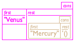
(cons "Earth" (cons "Venus" (cons "Mercury" '())))
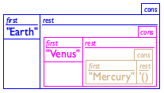
Рисунок 44: Создание списка
(cons "Earth" (cons "Venus" (cons "Mercury" '()))) 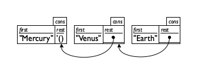
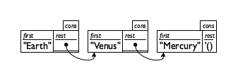
Рисунок 45: Составление списка
Поскольку даже у хороших художников возникнут проблемы с рисованием глубоко вложенных структур, компьютерные ученые вместо этого прибегают к диаграммам в виде прямоугольников(блоков) и стрелок. На рисунке 45 показано, как переставить последний ряд с рисунка 44. Каждая структура cons становится отдельным прямоугольником(блоком). Если остальное поле слишком сложное, чтобы его можно было нарисовать внутри блока, мы рисуем вместо него маркер и линию со стрелкой к блоку, который он содержит. В зависимости от того, как расположены блоки, вы получаете два вида диаграмм. Первый, отображаемый в верхнем ряду рисунка 45, перечисляет блоки в том порядке, в котором они созданы. Во втором, отображаемом в нижней строке, перечислены поля в том порядке, в котором они соединены(consed) вместе. Следовательно, вторая диаграмма сразу сообщает вам, что было бы произведено(возвращено) функцией first при применении к списку, независимо от длины списка. По этой причине программисты предпочитают второй вариант.
-
список небесных тел, скажем, всех планет нашей солнечной системы;
-
список блюд для еды, например, стейк, картофель фри, бобы, хлеб, вода, сыр Бри и мороженое; и
-
список цветов.
; A 3LON is a list of three numbers: ; (cons Number (cons Number (cons Number '()))) ; interpretation a point in 3-dimensional space
; A List-of-names is one of: ; – '() ; – (cons String List-of-names) ; interpretation a list of invitees, by last name
(cons "Findler" '())
Упражнение 130. Создайте элемент List-of-names(списка имен), содержащий пять String(строк). Нарисуйте блочное представление списка, аналогичное изображенному на рисунке 44.
Упражнение 131. Предоставьте определение данных для представления списков Boolean(логических значений). Класс содержит все произвольно длинные списки Boolean(логических значений).
8.2 Что такое '(), Что такое cons
Давайте сделаем шаг назад и внимательно посмотрим на '() и cons. Как уже упоминалось, '() - это просто константа. По сравнению с такими константами, как 5 или "this is a string", она больше похожа на имя функции или переменную; но по сравнению с #true и #false, это можно легко увидеть, что на самом деле это просто представление BSL для пустых списков.
> (empty? '()) #true
> (empty? 5) #false
> (empty? "hello world") #false
> (empty? (cons 1 '())) #false
> (empty? (make-posn 0 0)) #false
(define-struct pair [left right]) ; A ConsPair is a structure: ; (make-pair Any Any). ; Any Any -> ConsPair (define (our-cons a-value a-list) (make-pair a-value a-list))
> (cons 1 2) cons:second argument must be a list, but received 1 and 2
; A ConsOrEmpty is one of: ; – '() ; – (make-pair Any ConsOrEmpty) ; interpretation ConsOrEmpty is the class of all lists ; Any Any -> ConsOrEmpty (define (our-cons a-value a-list) (cond [(empty? a-list) (make-pair a-value a-list)] [(pair? a-list) (make-pair a-value a-list)] [else (error "cons: second argument ...")]))
; ConsOrEmpty -> Any ; extracts the left part of the given pair (define (our-first a-list) (if (empty? a-list) (error 'our-first "...") (pair-left a-list)))
Если ваша программа может получить доступ к определению структурного типа для pair, легко создать pair, которые не содержат '() или другую pair в правом поле. Независимо от того, созданы ли такие плохие экземпляры намеренно или случайно, они имеют тенденцию странным образом нарушать работу функций и программ. Поэтому BSL скрывает фактическое определение структурного типа для cons, чтобы избежать этих проблем. Локальные Определения демонстрирует один из способов, которым ваши программы могут скрывать такие определения, но на данный момент вам эта возможность не нужна.
'()
специальное значение, в основном для представления пустого списка
предикат для распознавания '() и ничего больше
проверяющий конструктор для создания экземпляров с двумя полями
селектор для извлечения последнего добавленного элемента
селектор для извлечения расширенного списка
предикат для распознавания экземпляров cons
Рисунок 46: Список примитивов
Рисунок 46 подводит итог этому разделу. Ключевым моментом является то, что '() - уникальное значение, а cons - проверяющий конструктор, который создает значение - список. Кроме того, first, rest и cons? являются просто разными именами обычных предикатов и селекторов. Таким образом, в этой главе рассказывается не о новом способе создания данных, а о новом способе формулирования определений данных.
8.3 Программирование со Списками
Пример проблемы Вы работаете со списком контактов для нового сотового телефона. Владелец телефона постоянно обновляет этот список и просматривает его. На данный момент вам поручено разработать функцию, которая использует этот список контактов и определяет, содержит ли он имя “Flatt”.
; List-of-names -> Boolean ; determines whether "Flatt" is on a-list-of-names (define (contains-flatt? a-list-of-names) #false)
(check-expect (contains-flatt? '()) #false)
(check-expect (contains-flatt? (cons "Find" '())) #false) (check-expect (contains-flatt? (cons "Flatt" '())) #true)
(check-expect (contains-flatt? (cons "A" (cons "Flatt" (cons "C" '())))) #true)
Сделай вдох. Запустите программу. Заголовок - это “dummy”(фиктивное) определение функции; у вас есть несколько примеров; они превратились в тесты; и, что лучше всего, некоторые из них действительно преуспевают. Они добиваются успеха по неправильной причине, но добиваются успеха. Если сейчас все обретает смысл, читайте дальше.
(define (contains-flatt? alon) (cond [(empty? alon) ...] [(cons? alon) (... (first alon) ... (rest alon) ...)]))
(define (contains-flatt? alon) (cond [(empty? alon) #false] [(cons? alon) (... (string=? (first alon) "Flatt") ... (rest alon) ...)]))
К счастью, у нас есть contains-flatt? и она отвечает всем требованиям. В соответствии с предназначением она определяет, содержит ли список "Flatt". Утверждение подразумевает, что (contains-flatt? l) сообщает нам, содержит ли список строк l "Flatt". И в том же духе (contains-flatt? (rest alon)) определяет, является ли "Flatt" членом (rest alon), что нам и нужно знать.
; List-of-names -> Boolean (define (contains-flatt? alon) (cond [(empty? alon) #false] [(cons? alon) (... (string=? (first alon) "Flatt") ... ... (contains-flatt? (rest alon)) ...)]))
; List-of-names -> Boolean ; determines whether "Flatt" occurs on alon (check-expect (contains-flatt? (cons "X" (cons "Y" (cons "Z" '())))) #false) (check-expect (contains-flatt? (cons "A" (cons "Flatt" (cons "C" '())))) #true) (define (contains-flatt? alon) (cond [(empty? alon) #false] [(cons? alon) (or (string=? (first alon) "Flatt") (contains-flatt? (rest alon)))])) Рисунок 47: Поиск в списке
На рисунке 47 показано полное определение. В целом оно не слишком отличается от определений в первой главе книги. Оно состоит из сигнатуры, заявления о цели(предназначения), двух примеров и определения. Единственный способ, которым это определение функции отличается от всего, что вы видели раньше, - это ссылка на себя(self-reference), то есть ссылка на contains-flatt? в теле define. С другой стороны, определение данных также является ссылающимся на себя, поэтому в некотором смысле ссылка на себя в функции не должна вызывать особого удивления.
(cons "Fagan" (cons "Findler" (cons "Fisler" (cons "Flanagan" (cons "Flatt" (cons "Felleisen" (cons "Friedman" '())))))))
Упражнение 134. Разработайте функцию contains?, которая определяет, встречается ли некоторая заданная строка в заданном списке строк.
(contains-flatt? (cons "Flatt" (cons "C" '()))) == (cond [(empty? (cons "Flatt" (cons "C" '()))) #false] [(cons? (cons "Flatt" (cons "C" '()))) (or (string=? (first (cons "Flatt" (cons "C" '()))) "Flatt") (contains-flatt? (rest (cons "Flatt" (cons "C" '())))))])
8.4 Вычисление со списками
На рис. 48 показан первый шаг, в котором используется обычное правило подстановки для определения значения приложения(применения). Результатом является условное выражение, потому что, как сказал бы учитель алгебры, функция определяется поэтапно.
... == (cond [#false #false] [(cons? (cons "Flatt" (cons "C" '()))) (or (string=? (first (cons "Flatt" (cons "C" '()))) "Flatt") (contains-flatt? (rest (cons "Flatt" (cons "C" '())))))]) == (cond [(cons? (cons "Flatt" (cons "C" '()))) (or (string=? (first (cons "Flatt" (cons "C" '()))) "Flatt") (contains-flatt? (rest (cons "Flatt" (cons "C" '())))))]) == (cond [#true (or (string=? (first (cons "Flatt" (cons "C" '()))) "Flatt") (contains-flatt? (rest (cons "Flatt" (cons "C" '())))))]) == (or (string=? (first (cons "Flatt" (cons "C" '()))) "Flatt") (contains-flatt? (rest (cons "Flatt" (cons "C" '())))))
Вычисление продолжается на рисунке 49. Чтобы найти правильное предложение выражения cond, мы должны определить значение условий одно за другим. Поскольку consed список не является пустым, результатом первого условия будет #false, и поэтому мы исключаем первое предложение cond. Наконец, условие во втором предложении вычисляется как #true, потому что cons? применен к созданному cons списку.
... == (or (string=? "Flatt" "Flatt") (contains-flatt? (rest (cons "Flatt" (cons "C" '()))))) == (or #true (contains-flatt? ...)) == #true
Отсюда осталось всего три арифметических шага, чтобы получить окончательный результат. На рисунке 50 показаны три шага. Первый вычисляет (first (cons "Flatt" ...)) как "Flatt" из-за законов для first. Второй обнаруживает, что "Flatt" - это строка, равная "Flatt". Третий говорит, что (or #true X) равно #true независимо от того, что такое X.
(our-first (our-cons "a" '())) == "a" (our-rest (our-cons "a" '())) == '()
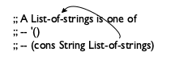
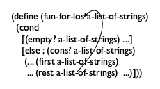
Рисунок 51: Стрелки для ссылок на себя в определениях данных и шаблонах
9 Разработка с использованием определениями данных ссылающимися на самих себя
-
Если формулировка проблемы касается информации произвольного размера, вам потребуется определение данных ссылающееся на себя для ее представления. На данный момент вы видели только один такой класс - List-of-names (Список имен). В левой части рисунка 51 показано, как таким же образом определить List-of-strings(список строк). Остальные списки атомарных данных работают точно так же.
Числа тоже кажутся произвольно большими. Для неточных цифр это иллюзия. Для точных целых чисел это действительно так. Поэтому работа с целыми числами является частью этой главы.
Чтобы определение данных, ссылающихся на себя, было действительным(правильным), оно должно удовлетворять двум условиям. Во-первых, оно должно содержать как минимум два предложения. Во-вторых, по крайней мере одна из строк не должна ссылаться на класс данных, который определяется. Хорошей практикой является явное обозначение ссылок на себя с помощью стрелок от ссылок в определении данных обратно к определяемому термину; см. рисунок 51 для примера такой аннотации.
Вы должны проверять корректность определений данных ссылающихся на себя, создавая примеры данных. Начиная с предложения, которое не относится к определению данных; перейдем к другому, используя первый пример, в котором предложение относится к самому определению. Таким образом, для определения данных на рисунке 51 вы получите списки, подобные следующим трем: -
В материале заголовка ничего не меняется: сигнатура, заявление о цели(предназначение) и фиктивное определение. Когда вы формулируете предназначение, сосредоточьтесь на том, что функция вычисляет, а не на том, как она это делает, особенно не на том, как она проходит через экземпляры данных.
; List-of-strings -> Number ; counts how many strings alos contains (define (how-many alos) 0) -
Когда дело доходит до функциональных примеров, обязательно проработайте входные данные, в которых несколько раз используется ссылающееся на себя предложение в определении данных. Это лучший способ позже сформулировать тесты, которые охватывают всё определение функции.
В нашем текущем примере предназначение практически само генерирует функциональные примеры из примеров данных:Первая строка посвящена пустому списку, и мы знаем, что пустой список ничего не содержит. Вторая строка - это список из одной строки, поэтому 1 - желаемый ответ. Последняя строка представляет собой список из двух строк. -
По сути, определение данных ссылающихся на себя выглядит как определение смешанных данных. Таким образом, разработка шаблона может продолжаться в соответствии с рецептом, приведенным в разделе Детализация и структуры. В частности, мы формулируем выражение cond с таким количеством предложений cond, сколько предложений в определении данных, сопоставляем каждое условие распознавания с соответствующим предложением в определении данных и записываем соответствующие выражения селектора во всех строках cond, обрабатывающих составные значения.
Вопрос
Ответ
Различаются ли в определении данных разные подклассы данных?
Вашему шаблону требуется столько предложений cond, сколько подклассов, которые различает определение данных
Чем подклассы отличаются друг от друга?
Используйте различия, чтобы сформулировать условие для каждого предложения.
Имеются ли какие-либо положения о структурированных значениях?
Если да, добавьте в предложение соответствующие выражения селектора.
Используются ли в определении данных ссылки на себя?
Сформулируйте “естественные рекурсии” для шаблона, чтобы представить ссылки на самого себя в определении данных.
Если определение данных относится(ссылается) к другому определению данных, где эта перекрестная ссылка на другое определение данных?
Специализируйте шаблон для другого определения данных. Обратитесь к этому шаблону. См. Проектирование с использованием детализации. Снова, шаги 4 и 5 рецепта разработки.
Рисунок 52: Как преобразовать определение данных в шаблон
На рисунке 52 эта идея выражена в виде игры в вопросы и ответы. В левом столбце задаются вопросы об определении данных для аргумента, а в правом столбце объясняется, что означает ответ для построения шаблона.
Если вы проигнорируете последнюю строку и примените первые три вопроса к любой функции, которая использует List-of-strings(список строк), вы придете к этой форме:(define (fun-for-los alos) (cond [(empty? alos) ...] [else (... (first alos) ... (rest alos) ...)])) Напомним, однако, что цель шаблона - выразить определение данных в виде макета функции. То есть шаблон выражает в виде кода то, что в определении данных для ввода выражается как смесь английского языка и BSL. Следовательно, все важные части определения данных должны найти аналог в шаблоне, и это руководство должно также соблюдаться, когда определение данных является ссылающимся на себя - содержит стрелку изнутри определения к определяемому термину. В частности, когда определение данных является ссылающимся на себя в i-м предложении и k-м поле структуры, упомянутой там, шаблон должен быть ссылающимся на себя в i-м предложении cond и выражении селектора для
Рисунок 51 иллюстрирует эту идею с шаблоном для функций, которые используют List-of-strings(список строк), показанный рядом с определением данных. Оба содержат одну стрелку, которая берет начало во втором предложении - поле rest и селектор, соответственно - и указывает на начало соответствующих определений.
Поскольку BSL и большинство языков программирования ориентированы на текст, вы должны использовать альтернативу стрелке, а именно само-применение применение функции к соответствующему выражению селектора:(define (fun-for-los alos) (cond [(empty? alos) ...] [else (... (first alos) ... ... (fun-for-los (rest alos)) ...)])) Мы называем вызов функции самой себя - рекурсией, а в первых четырех частях книги - естественной рекурсией. -
Для тела функции мы начинаем с тех строк Для любопытных среди наших читателей рецепт построения произвольно больших данных соответствует так называемым “доказательствам по индукции” в математике, а “прыжок веры” представляет собой использование гипотезы индукции для индуктивного шага такого доказательства. Логика доказывает справедливость этого метода доказательства с помощью теоремы индукции. cond без рекурсивных вызовов функций, известных как базовые случаи. Соответствующие ответы обычно легко сформулировать или они уже приведены в качестве примеров.
Затем мы имеем дело со случаями ссылки на самих себя. Начнем с того, что напомним себе, что вычисляет каждое из выражений в строке шаблона. Для естественной рекурсии мы предполагаем, что функция уже работает, как указано в нашем предназначении. Этот последний шаг, и есть - прыжок веры, но, как вы увидите, он работает всегда.
Остальное - это комбинация различных значений.
Вопрос
Ответ
Каковы ответы на нерекурсивные условия предложений cond?
Примеры должны сказать вам, какие значения вам здесь нужны. Если их нет, сформулируйте соответствующие примеры и тесты.
Что вычисляют выражения селектора в рекурсивных предложениях?
Определения данных сообщают вам, какие данные извлекают эти выражения, а интерпретации определений данных говорят вам, что эти данные представляют.
Что вычисляют естественные рекурсии?
Используйте предназначение функции, чтобы определить, что означает значение рекурсии, а не то, как она вычисляет этот ответ. Если предназначение не дает вам ответа, улучшите предназначение.
Как функция может объединить эти значения, чтобы получить желаемый ответ?
Найдите функцию в BSL, которая объединяет значения. Или, если это не сработает, создайте пожелания для вспомогательной функции. Для многих функций этот последний шаг несложен. Цель, примеры и шаблон, все вместе, сообщают вам, какая функция или выражение объединяет(combines) доступные значения в правильный результат. Мы называем эту функцию или выражение комбинатором/объединителем(combinator), слегка злоупотребляя существующей терминологией.
Рисунок 53: Как превратить шаблон в определение функции
Вопрос
Ответ
Итак, если вы застряли здесь, ...
... расположите примеры из третьего шага в таблице. Поместите данный вывод в первый столбец и желаемый результат в последний столбец. В промежуточные столбцы введите значения выражений селектора и естественной рекурсии. Добавляйте примеры, пока не увидите шаблон, подсказывающий комбинатор.
Если шаблон ссылается на какой-то другой шаблон, что вычисляет вспомогательная функция?
Сверьтесь с предназначением другой функции и примерами, чтобы определить, что она вычисляет, и предположите, что вы сможете воспользоваться результатом, даже если вы не закончили проектирование этой вспомогательной функции..
Рисунок 54: Превращение шаблона в функцию, метод таблицы
На Рисунке 53 сформулированы первые четыре вопроса и ответы для этого шага. Давайте воспользуемся этой игрой, чтобы завершить определение how-many. Переименование шаблона fun-for-los в how-many дает нам вот что:; List-of-strings -> Number ; determines how many strings are on alos (define (how-many alos) (cond [(empty? alos) ...] [else (... (first alos) ... ... (how-many (rest alos)) ...)])) Как уже показывают функциональные примеры, ответ для базового случая равен 0. Два выражения во втором предложении вычисляют first(первый) элемент и количество строк в (rest alos)(остатке списка). Чтобы вычислить, сколько строк есть во всём alos, функции просто нужно добавить 1 к значению последнего выражения:Felix Klock предложил этот основанный на таблице подход к угадыванию комбинатора.
Найти правильный способ объединения значений в желаемый ответ не всегда так просто. Начинающие программисты часто зацикливаются(застревают) на этом шаге. Как видно на рисунке 54, рекомендуется рассположить функциональные примеры в таблице, в которой также указаны значения выражений в шаблоне. На Рисунке 55 показано, как выглядит эта таблица для нашего примера how-many. В крайнем левом столбце перечислены образцы входных данных, а в крайнем правом столбце содержатся желаемые ответы для этих входных данных. Три столбца между ними показывают значения выражений шаблона: (first alos), (rest alos) и (how-many (rest alos)), который является естественной рекурсией. Если вы посмотрите на эту таблицу достаточно долго, вы узнаете, что столбец разультата всегда на единицу больше, чем значения в столбце естественной рекурсии. Таким образом, вы можете догадаться, чтоэто выражение, которое вычисляет желаемый результат. Поскольку DrRacket быстро проверяет такие предположения, подключите его и нажмите RUN. Если примеры, преобразованные в тесты, проходят успешно, породумайте выражение, чтобы убедитсья, что оно работатет для всех списков; в противном случае добавляйте в таблицу больше строк примеров, пока у вас не появится другая идея.В таблице также указано, что некоторые выражения селектора в шаблоне, возможно, не имеют отношения к фактическому определению. Здесь (first alos) не требуется вычислять для вычисления окончательного ответа— что сильно отличается от contains-flatt?, в котором используются оба выражения из шаблона.
Проходя оставшуюся часть этой книги, имейте в виду, что во многих случаях этап комбинирования может быть выражен с помощью примитивов BSL, скажем, +, and или cons. Однако в некоторых случаях вам, возможно, придется загадать пожелание, т.е создание вспомогательной функции. Наконец, в других случаях вам могут понадобиться вложенные условия.
-
Наконец, убедитесь, что все примеры превращены в тесты, что эти тесты проходят, и что их выполнение охватывает все части функции.
Вот наши примеры для how-many преобразованные в тесты:(check-expect (how-many '()) 0) (check-expect (how-many (cons "a" '())) 1) (check-expect (how-many (cons "b" (cons "a" '()))) 2) Помните, что лучше всего формулировать примеры непосредственно как тесты, и BSL позволяет это. Это также помогает, если вам нужно прибегнуть к табличному подходу на предыдущем шаге.
alos
(first alos)
(rest alos)
(how-many (rest alos))
(how-many alos)
(cons "a" '())
"a"
'()
0
1
(cons "b" (cons "a" '()))
"b"
(cons "a" '())
1
2
(cons "x" (cons "b" (cons "a" '())))
"x"
(cons "b" (cons "a" '()))
2
3 Рисунок 55: Табулирование(размещение в виде таблицы) аргументов, промежуточных значений и результатов.
Рисунок 56 суммирует рецепт разработки этого раздела в табличном формате. В первом столбце указаны этапы рецепта разработки, во втором - ожидаемые результаты каждого этапа. В третьем столбце мы описываем действия, которые помогут на в этом. Вы можете скопировать рисунок 56 на одностороннюю карту указаний и записать свои любимые варианты вопросов и ответов для этого рецепта разработки на обратной стороне. Тогда носите её с собой для использования в будущем. Рисунок адаптирован к тому типу определений ссылающихся на себя списков, которые мы используем в этой главе. Как всегда, практика помогает вам овладеть процессом, поэтому мы настоятельно рекомендуем вам выполнить следующие упражнения, в которых вам предлагается применить рецепт к нескольким видам примеров.
Шаги
результат
действия
анализ проблемы
определение данных
Разработайте представление данных для информации; создайте примеры для конкретных элементов информации и интерпретации данных как информации; идентифицируйте ссылки на себя.
заголовок
сигнатура; цель; пустое определение
Запишите сигнатуру, используя определенные имена; сформулируйте краткое изложение цели; создайте фиктивную(пустую) функцию, которая производит постоянное значение из указанного диапазона.
примеры
примеры и тесты
Проработайте несколько примеров, по крайней мере, по одному на каждое предложение в определении данных.
шаблон
шаблон функции
Преобразуйте определение данных в шаблон: одно предложение cond на предложение данных; селекторы, в которых условно идентифицируют структуру; одна естественная рекурсия для каждой ссылки на себя.
определение
полноценное определение
Найдите функцию, которая объединяет значения выражений в предложениях cond в ожидаемый ответ.
проверка/тест
проверяющие тесты
Превратите их в тесты check-expect и запустите их.
Рисунок 56: Разработка функции для ссылающихся на себя данных
9.1 Упражнения для пальцев: Списки
Упражнение 137. Сравните шаблон для contains-flatt? с шаблоном для how-many. Игнорируя имя функции, они одинаковы. Объясните сходство.
; A List-of-amounts is one of: ; – '() ; – (cons PositiveNumber List-of-amounts)
Разработайте функцию sum, которая использует List-of-amounts и вычисляет сумму amounts(количеств). Используйте пошаговый исполнитель DrRacket, чтобы увидеть как (sum l) работает для короткого списка l в List-of-amounts.
; A List-of-numbers is one of: ; – '() ; – (cons Number List-of-numbers)
Разработайте функцию pos?, которая использует List-of-numbers и определяет, являются ли все числа положительными числами. Другими словами, если (pos? l) выдает #true, то l это элемент из List-of-amounts. Используйте пошаговый исполнитель DrRacket, чтобы понять, как pos? работает для (cons 5 '()) и (cons -1 '()).
Также разработайте checked-sum. Функция использует List-of-numbers(список чисел). Она производит(возвращает) их сумму, если ввод также принадлежит List-of-amounts; в противном случае сигнализирует об ошибке. Подсказка Напоминаем, что нужно использвать check-error.
Что вычисляет sum для элемента List-of-numbers(списка чисел)?
Упражнение 140. Разработайте функцию all-true, которая использует список логических (Boolean) значений и определяет, все ли они равны #true. Другими словами, если в списке есть #false, функция выдает #false.
Теперь разработайте one-true, функцию, которая использует список логических значений и определяет, является ли хотя бы один элемент в списке #true.
Используйте табличный подход к кодированию. Это может помочь с базовым случаем. Используйте пошаговый исполнитель DrRacket, чтобы увидеть, как эти функции обрабатывают списки (cons #true '()), (cons #false '()) и (cons #true (cons #false '())).
; List-of-string -> String ; concatenates all strings in l into one long string (check-expect (cat '()) "") (check-expect (cat (cons "a" (cons "b" '()))) "ab") (check-expect (cat (cons "ab" (cons "cd" (cons "ef" '())))) "abcdef") (define (cat l) (cond [(empty? l) ""] [else (... (first l) ... (cat (rest l)) ...)]))
l
(first l)
(rest l)
(cat (rest l))
(cat l)
(cons "a" (cons "b" '()))
???
???
???
"ab"
(cons "ab" (cons "cd" (cons "ef" '())))
???
???
???
"abcdef" Рисунок 57: Таблица для cat
Заполните таблицу на рисунке 57. Угадайте функцию, которая может создать желаемый результат из значений, вычисленных с помощью подвыражений.
Используйте пошаговый исполнитель DrRacket для вычисления (cat (cons "a" '())).
Упражнение 142. Разработайте функцию ill-sized?, которая потребляет список изображений loi и положительное число n. Она создает первое изображение на loi, которое не является квадратом n на n; если она не может найти такое изображение, она выдает #false.
; ImageOrFalse является одним из: ; – Image ; – #false
9.2 Не пустые Списки
Теперь вы знаете достаточно, чтобы использовать cons и создавать определения данных для списков. Если вы решили(некоторые из) упражнений в конце предыдущего раздела, вы можете работать со списками различных видов чисел, списками логических значений, списками изображений и т.д. В этом разделе мы продолжаем изучать, что такое списки и как их обрабатывать.
; A List-of-temperatures is one of: ; – '() ; – (cons CTemperature List-of-temperatures) (define ABSOLUTE0 -272) ; A CTemperature is a Number greater than ABSOLUTE0.
; List-of-temperatures -> Number ; computes the average temperature (define (average alot) 0)
(check-expect (average (cons 1 (cons 2 (cons 3 '())))) 2)
(define (average alot) (cond [(empty? alot) ...] [(cons? alot) (... (first alot) ... ... (average (rest alot)) ...)]))
Однако превратить этот шаблон в определение функции слишком сложно. Первое предложение cond требует число, которое представляет собой среднее значение пустой совокупности температур, но такого числа нет. Точно так же второе предложение требует функции, которая объединяет температуру и среднее значение для оставшихся температур в новое среднее значение. Хотя это возможно, вычисление среднего таким способом очень неестественно.
; List-of-temperatures -> Number ; computes the average temperature (define (average alot) (/ (sum alot) (how-many alot))) ; List-of-temperatures -> Number ; adds up the temperatures on the given list (define (sum alot) 0) ; List-of-temperatures -> Number ; counts the temperatures on the given list (define (how-many alot) 0)
; List-of-temperatures -> Number ; adds up the temperatures on the given list (define (sum alot) (cond [(empty? alot) 0] [else (+ (first alot) (sum (rest alot)))]))
Когда вы читаете это определение average(среднего) сейчас, оно очевидно правильно просто потому, что оно напрямую соответствует тому, что все узнают об усреднении в школе. Тем не менее, программы работают не только для нас, но и для других. В частности, другие должны читать сигнатуры, использовать функцию и ожидать информативного ответа. Но наше определение average(среднего) не работает для пустых списков температур.
Упражнение 143. Определите, как ведет себя average в DrRacket при применении к пустому списку. Затем разработайте функцию checked-average, которая выдает информативное сообщение об ошибке при применении к '().
В математике мы бы сказали, что упражнение 143 показывает, что average является частичной(partial) функцией, потому что она вызывает ошибку для '().
; An NEList-of-temperatures is one of: ; – ??? ; – (cons CTemperature NEList-of-temperatures)
; An NEList-of-temperatures is one of: ; – (cons CTemperature '()) ; – (cons CTemperature NEList-of-temperatures) ; interpretation non-empty lists of Celsius temperatures
(cons c '())
; NEList-of-temperatures -> Number ; computes the average temperature (check-expect (average (cons 1 (cons 2 (cons 3 '())))) 2) (define (average ne-l) (/ (sum ne-l) (how-many ne-l)))
Упражнение 144. Будут ли sum и how-many работать для NEList-of-temperatures даже если они предназначены для входных данных из List-of-temperatures? Если вы думаете, что они не работают, приведите контр-примеры. Если думаете что будут, объясните почему.
Тем не менее, определение также поднимает вопрос, как спроектировать sum и how-many, потому что сейчас они используют экземпляры NEList-of-temperatures. Вот очевидный результат первых трех шагов рецепта разработки:
; NEList-of-temperatures -> Number ; computes the sum of the given temperatures (check-expect (sum (cons 1 (cons 2 (cons 3 '())))) 6) (define (sum ne-l) 0)
(define (sum ne-l) (cond [(empty? (rest ne-l)) (... (first ne-l) ...)] [else (... (first ne-l) ... (rest ne-l) ...)]))
(define (sum ne-l) (cond [(empty? (rest ne-l)) (... (first ne-l) ...)] [else (... (first ne-l) ... (sum (rest ne-l)) ...)]))
(define (sum ne-l) (cond [(empty? (rest ne-l)) (first ne-l)] [else (... (first ne-l) ... (sum (rest ne-l)) ...)]))
(define (sum ne-l) (cond [(empty? (rest ne-l)) (first ne-l)] [else (+ (first ne-l) (sum (rest ne-l)))]))
Упражнение 145. Разработайте предикат sorted>?, который использует NEList-of-temperatures и возвращает #true, если температуры отсортированы в порядке убывания. То есть, если второй меньше первого, третий меньше второго и так далее. В противном случае выдает #false.
Подсказка Это еще одна проблема, в которой хорошо работает табличный метод, определения комбинатора. Вот неполная таблица для ряда примеров на рисунке 58. Заполните оставшуюся часть таблицы. Затем попробуйте создать выражение, вычисляющее результат по кусочкам.
l
(first l)
(rest l)
(sorted>? (rest l))
(sorted>? l)
(cons 1 (cons 2 '()))
1
???
#true
#false
(cons 3 (cons 2 '()))
3
(cons 2 '())
???
#true
(cons 0 (cons 3 (cons 2 '())))
0
(cons 3 (cons 2 '()))
???
??? Рисунок 58: Таблица для sorted>?
Упражнение 146. Разработайте how-many для NEList-of-temperatures. Она завершает average, поэтому убедитесь, что average также проходит все свои тесты.
Упражнение 147. Разработайте определение данных для NEList-of-Booleans, представляющее не пустые списки логических значений. Затем перепроектируйте функции all-true и one-true из упражнения 140.
Упражнение 148. Сравните определения функций из этого раздела (sum, how-many, all-true, one-true) с соответствующими определениями функций из предыдущих разделов. Лучше ли работать с определениями данных, которые содержат пустые списки, а не с определениями для не пустых списков? Почему? Почему нет?
9.3 Натуральные числа
> (make-list 2 "hello") (cons "hello" (cons "hello" '()))
> (make-list 3 #true) (cons #true (cons #true (cons #true '())))
> (make-list 0 17) '()
Особенностью такого испольования add1 является то, что она действует больше как конструктор определения структурного типа, чем как обычная функция. По этой причине BSL также поставляется с функцией sub1, которая является “селектором”, соответствующим add1. Учитывая любое натуральное число m, не равное 0, вы можете использовать sub1, что бы узнать число, которое использовалось при построении m. Другими словами, add1 похож на cons, а sub1 похож на first и rest.
На этом этапе вы можете задаться вопросом, какие предикаты отличают 0 от тех натуральных чисел, которые не равны 0. Как и в случае со списками, есть два предиката: zero?, которые определяет, равно ли какое-либо данное число 0, и positive?, который определяет, является ли какое-то число больше 0.
; N String -> List-of-strings ; creates a list of n copies of s (check-expect (copier 0 "hello") '()) (check-expect (copier 2 "hello") (cons "hello" (cons "hello" '()))) (define (copier n s) '())
; N String -> List-of-strings ; creates a list of n copies of s (check-expect (copier 0 "hello") '()) (check-expect (copier 2 "hello") (cons "hello" (cons "hello" '()))) (define (copier n s) (cond [(zero? n) '()] [(positive? n) (cons s (copier (sub1 n) s))])) Рисунок 59: Создание списка копиий
На этом этапе вы должны запустить тесты, чтобы убедиться, что эта функция работает хотя бы для двух проработанных примеров. Кроме того, вы можете захотеть использовать эту функцию на некоторых дополнительных входах.
Упражнение 149. Правильно ли работает функция copier, когда вы применяете её к натуральному числу, логическому значению или к изображению? Или вам нужно разрабатывать другую функцию? Прочитайте Абстракция для ответа.
; N -> Number ; computes (+ n pi) without using + (check-within (add-to-pi 3) (+ 3 pi) 0.001) (define (add-to-pi n) pi)
Упражнение 151. Разработайте функцию multiply. Она принимает натуральное число n и умножает его на число x без использования *.
Используйте пошаговый исполнитель DrRacket, чтобы вычислить (multiply 3 x) для любого x, который вам нравится. Как multiply соотносится с тем, что вы знаете из начальной школы?
Упражнение 152. Разработайте две функции: col и row.
Функция col использует натуральное число n и изображение img. Она создает столбец - вертикального расположения - из n копий img.
Функция row использует натуральное число n и изображение img. Она создает строку — горизонтального расположения — из n копий img.
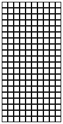 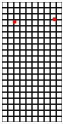 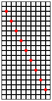
Рисунок 60: Случайные атаки
Упражнение 153. Цель этого упражнения - визуализировать результат европейского студенческого бунта 1968 года. Небольшая группа студентов собирается сделать воздушные шары, наполненные красками, входит в какой-нибудь лекционный зал и беспорядочно бросает воздушные шары в посетителей. Ваша программа показывает, как воздушные шары окрашивают сиденья в лекционном зале.
Используйте две функции из упражнения 152, чтобы создать прямоугольник с COLUMNS колонками и ROWS строк, каждая из которые имеют размер 10 на 10. Поместите его на пустую сцену( empty-scene) того же размера. Это изображение - ваш лекционный зал.
Создайте add-balloons. Функцию потребляющую список из Posn координат, которые соответствуют размерам лекционного зала. Она создает изображение лекционного зала с добавленными красными точками, какие указаны в списке Posn
На Рисунке 60 показан результат нашего решения для 10 COLUMNS колоноки и 20 ROWS при наличии некоторого списка Posns. Крайний левый - чистый лекционный зал, второй - после удара двух воздушных шаров, а последний - крайне маловероятное распределение 10 попаданий. Где 10 попаданий?
9.4 Русские Матрешки
Проблема может показаться вам абстрактной или даже абсурдной; непонятно, зачем вам изображать матрешек или что вы будете делать с таким представлением. Просто подыграй пока.
Теперь рассмотрим проблему представления таких матрешек в виде данных BSL. Проявив немного воображения, легко уведеть, что художник может создать вложение из Русских матрешек, состоящее из произвольного числа кукол. Ведь любую матрешку можно обернуть еще одним слоем(другой матрешкой). С другой стороны, вы также знаете, что глубоко внутри находится цельная матрешка, внутри которой ничего нет.
Для каждого слоя матрешки нас может интересовать множество разных вещей: ее размер, хотя он связан с уровнем вложенности; её цвет; изображение, которое нарисовано на поверхности; и так далее. Здесь мы просто выбираем один, а именно цвет куклы, которую мы представляем строкой. Учитывая это, мы знаем, что каждый слой русской матрешки имеет два свойства: свой цвет и матрешку, которая находится внутри. Чтобы представить фрагменты информации с двумя свойствами, мы всегда определяем структурный тип:
(define-struct layer [color doll])
(make-layer "green" "red")
(make-layer "yellow" (make-layer "green" "red"))
(make-layer "pink" (make-layer "black" "white"))
; RD -> Number ; how many dolls are a part of an-rd (define (depth an-rd) (cond [(string? an-rd) ...] [(layer? an-rd) (... (layer-color an-rd) ... ... (depth (layer-doll an-rd)) ...)]))
-
(layer-color an-rd) извлекает строку, описывающую цвет текущего слоя;
-
(layer-doll an-rd) извлекает матрешку, содержащуюся в текущем слое; и
-
(depth (layer-doll an-rd)) определяет, сколько кукол является частью (layer-doll an-rd), в соответствии с указанием предназначением depth.
; RD -> Number ; how many dolls are a part of an-rd (define (depth an-rd) (cond [(string? an-rd) 1] [else (+ (depth (layer-doll an-rd)) 1)]))
(check-expect (depth "red") 1) (check-expect (depth (make-layer "yellow" (make-layer "green" "red"))) 3)
"yellow, green, red"
Упражнение 155. Создайте функцию inner, которая принимает RD и возвращает (цвет) самой внутренней куклы. Используйте пошаговый исполнитель DrRacket, чтобы вычислить (inner rd) для вашего любимой матрешки rd.
9.5 Списки и Мир
Пример Задачи Разработайте программный мир, имитирующий стрельбу. Каждый раз, когда “player”(игрок) нажимает пробел, программа добавляет shot(выстрел) в нижнюю часть холста. Эти выстрелы поднимаются вертикально со скоростью один пиксель за тик.
(define HEIGHT 80) ; distances in terms of pixels (define WIDTH 100) (define XSHOTS (/ WIDTH 2)) ; graphical constants (define BACKGROUND (empty-scene WIDTH HEIGHT)) (define SHOT (triangle 3 "solid" "red"))
; A List-of-shots is one of: ; – '() ; – (cons Shot List-of-shots) ; interpretation the collection of shots fired
; A Shot is a Number. ; interpretation represents the shot's y-coordinate
; A ShotWorld is List-of-numbers. ; interpretation each number on such a list ; represents the y-coordinate of a shot
(check-expect (to-image (cons 9 '())) (place-image SHOT XSHOTS 9 BACKGROUND))
; ShotWorld -> Image (define (to-image w) (cond [(empty? w) ...] [else (... (first w) ... (to-image (rest w)) ...)]))
(place-image SHOT XSHOTS (first w) (to-image (rest w)))
На Рисунке 61 показано полное определение функции to-image, а также остальной части программы. Разработка tock аналогична разработке to-image, и вы должны выполнить её самостоятельно. Однако сигнатура обработчика keyh ставит один интересный вопрос. Она указывает, что обработчик использует два входа с нетривиальными определениями данных. С одной стороны, ShotWorld - это определение данных ссылающихся сами на себя. С другой стороны, определение KeyEvents - это большое перечисление. На данный момент мы предлагаем вам “угадать”, какой из двух аргументов должен стимулировать разработку шаблона; позже мы подробно изучим такие случаи.
; ShotWorld -> ShotWorld (define (main w0) (big-bang w0 [on-tick tock] [on-key keyh] [to-draw to-image])) ; ShotWorld -> ShotWorld ; moves each shot up by one pixel (define (tock w) (cond [(empty? w) '()] [else (cons (sub1 (first w)) (tock (rest w)))])) ; ShotWorld KeyEvent -> ShotWorld ; adds a shot to the world if the space bar is hit (define (keyh w ke) (if (key=? ke " ") (cons HEIGHT w) w)) ; ShotWorld -> Image ; adds each shot y on w at (XSHOTS,y} to BACKGROUND (define (to-image w) (cond [(empty? w) BACKGROUND] [else (place-image SHOT XSHOTS (first w) (to-image (rest w)))])) Рисунок 61: Программный мир на основе списков
(define (keyh w ke) (cond [(key=? ke "left") ...] [(key=? ke "right") ...] ... [(key=? ke " ") ...] ... [(key=? ke "a") ...] ... [(key=? ke "z") ...]))
Упражнение 156. Снабдите программу на рисунке 61 тестами и убедитесь, что она их проходит. Объясните, что делает main. Затем запустите программу с помощью main.
-
изменить высоту холста на 220 пикселей;
-
изменить ширину холста на 30 пикселей;
-
измените положение x линии выстрелов на “где-нибудь левее середины”;
-
изменить фон на зеленый прямоугольник; и
-
изменить рендеринг выстрелов на красный вытянутый прямоугольник.
Упражнение 158. Если вы запустите main, нажмите пробел (выстрелить) и подождите некоторое время, выстрел исчезнет с холста.Однако, когда вы закрываете холст мира, в результате получается мир, который все еще содержит этот невидимый выстрел
Разработайте альтернативную функцию tock, которая не просто перемещает выстрелы на один пиксель за такт часов, но также удаляет те, чьи координаты помещают их над холстом. Подсказка Вы можете рассмотреть разработку вспомогательной функции для рекурсивного предложения cond.
Упражнение 159. Превратите решение упражнения 153 в программный мир. Его основная функция, получившая название riot(бунт), заключается в использовании того количества воздушных шаров, которое студенты хотят бросить; его визуализация показывает, что один воздушный шар опускается за другим со скоростью один шарик в секунду. Функция создает список Posns, мест в которые попадают воздушные шары.
(define-struct pair [balloon# lob]) ; A Pair is a structure (make-pair N List-of-posns) ; A List-of-posns is one of: ; – '() ; – (cons Posn List-of-posns) ; interpretation (make-pair n lob) means n balloons ; must yet be thrown and added to lob
(2) Выражение big-bang на самом деле просто выражение. Это законно вложить в другое выражение.
(3) Напомним, что random создает случайные числа.
9.6 Примечание о списках и наборах (множествах)
Эта книга основана на вашем интуитивном понимании sets(множеств/наборов) как коллекций значений BSL. В Вселенной данных конкретно говорится, что определение данных вводит имя для набора/множества значений BSL. Есть один вопрос, который эта книга постоянно задает о множествах: входит ли какой-либо элемент в некоторый данный набор. Например, 4 входит в Number, а "four"(четыре) - нет. В книге также показано, как использовать определение данных, чтобы проверить, является ли какое-либо значение членом некоторого именованного набора, и как использовать некоторые определения данных для создания выбороки элементов из набора, но эти две процедуры касаются определений данных, а не наборов как таковых.
В то же время списки представляют собой наборы значений. Следовательно, вам может быть интересно, в чем разница между списком и набором или это ненужное различие. Если да, то этот раздел для вас.
На данный момент основное различие между наборами и списками состоит в том, что первые - это концепция, которую мы используем для обсуждения этапов разработки кода, а вторые - одна из многих форм данных в BSL, выбранном нами языке программирования. Эти две идеи живут в наших разговорах на довольно разных уровнях. Однако, учитывая, что определение данных вводит представление данных фактической информации внутри BSL, и учитывая, что наборы являются коллекциями информации, теперь вы можете спросить себя, как наборы представлены внутри BSL как данные.
Большинство полноценных языков напрямую поддерживают представление данных как списков, так и наборов(множеств).
; List-of-string String -> N ; determines how often s occurs in los (define (count los s) 0)
Давайте продолжим прямо и, возможно, наивно, и скажем, что наборы - это в основе своей списки. И, чтобы еще больше упростить, давайте сосредоточимся на списках чисел в этом разделе. Если мы теперь согласимся с тем, что просто имеет значение, является ли число частью набора или нет, почти сразу становится ясно, что мы можем использовать списки двумя разными способами для представления множеств/наборов.
; A Son.L is one of: ; – empty ; – (cons Number Son.L) ; ; Son is used when it ; applies to Son.L and Son.R
; A Son.R is one of: ; – empty ; – (cons Number Son.R) ; ; Constraint If s is a Son.R, ; no number occurs twice in s Рисунок 62: Два представления данных для множеств
На Рисунке 62 показаны два определения данных. Оба в основном говорят, что набор представлен в виде списка чисел. Разница в том, что определение справа имеет ограничение, согласно которому ни одно число не может встречаться в списке более одного раза. В конце концов, ключевой вопрос, который мы задаем о множестве(наборе), заключается в том, входит ли какое-то число в набор или нет, и не имеет значения, входит ли оно в набор один, два или три раза.
; Number Son.L -> Son.L ; removes x from s (define s1.L (cons 1 (cons 1 '()))) (check-expect (set-.L 1 s1.L) es) (define (set-.L x s) (remove-all x s))
; Number Son.R -> Son.R ; removes x from s (define s1.R (cons 1 '())) (check-expect (set-.R 1 s1.R) es) (define (set-.R x s) (remove x s)) Рисунок 63: Функции для двух представлений данных наборов
-
В тесте слева используется список, содержащий 1 дважды, а в правом - тот же набор с единичным cons.
-
Из-за этих различий set(набор) слева должен использовать remove-all, а тот, что справа, remove
(set- 1 set123)
(define set123-version1 (cons 1 (cons 2 (cons 3 '())))) (define set123-version2 (cons 1 (cons 3 (cons 2 '()))))
(check-member-of (set-.v1 1 set123.v1) set23-version1 set23-version2)
Для решения этой проблемы необходимо сочетание двух идей. Во-первых, напомним, что set- на самом деле гарантирует, что данный элемент не появится в результате. Это идея, которую наш способ превращения примеров в тесты не реализует. Во вторых, с помощью средства тестирования BSL check-satisfied, становится возможным точно сформулировать эту идею.
; Son -> Boolean ; #true if 1 is not a member of s; #false otherwise (define (not-member-1? s) (not (in? 1 s)))
(check-satisfied (set- 1 set123) not-member-1?)
property(свойство)
lists(списки)
sets(набор/множество)
membership(членство)
одно среди многих
критически важно
ordering(порядок)
критически важно
не имеет значения
# количество вхождений
sensible(заметно)
не имеет значения
size(размер)
конечный, но произвольный
конечный или бесконечный
Таким образом, в этом разделе объясняются существенные различия между множествами и списками, а также то, как представлять конечные множества с помощью конечных списков двумя различными способами. BSL недостаточно выразителен для представления бесконечных множеств; Упражнение 299 знакомит свовершенно другим представлением множеств, представлением, которое также может справиться с бесконечными множествами. Однако вопрос о том, как реальные языки программирования представляют множества, выходит за рамки этой книги.
Упражнение 160. Разработайте функции set+.L и set+.R, которые создают набор(множество), добавляя число x к некоторому заданному набору s для левого и правого определения данных, соответственно.
10 Подробнее о Списках
Списки - это универсальная форма данных, которая теперь доступна почти во всех языках. Программисты использовали их для создания больших приложений, искусственного интеллекта, распределеных систем и многого другого. В этой главе показаны некоторые идеи из этого мира, включая функции, которые вызываются для структур внутри списков и представления текстовых файлов в виде списков.
10.1 Функции, создающие списки
Назовем эту новую функцию wage*. Её задача - обработать все часы работы сотрудников и определить причитающуюся заработную плату каждому из них. Для простоты предположим, что входные данные - это список чисел, каждое из которых представляет количество часов, которые отработал один сотрудник. и что ожидаемый результат - это список заработанной заработной платы, также представленной списком чисел.
; List-of-numbers -> List-of-numbers ; computes the weekly wages for the weekly hours (define (wage* whrs) '())
Учитывая, что wage* потребляет(использует) те же данные, что и некоторые другие функции из раздела Списки и учитывая, что шаблон зависит от формы определения данных, вы можете повторно использовать этот шаблон:
(define (wage* whrs) (cond [(empty? whrs) ...] [else (... (first whrs) ... ... (wage* (rest whrs)) ...)]))
Пришло время для самого креативного шага в разработке(проектировании). Следуя рецепту разработки, мы рассматриваем каждую строку cond шаблона отдельно. Для нерекурсивного случая, (empty? whrs) равно истине, что означает, что ввод это '(). В приведённых выше примерах указывается ожидаемый ответ, '(), и на этом все готово.
-
(first whrs) дает первое число whrs, которое является первым количеством отработанных часов;
-
(rest whrs) оставшаяся часть данного списка; и
-
(wage* (rest whrs)) говорит, что остаток обрабатывается той же самой функцией, которую мы определяем. Как всегда, мы используем её сигнатуру и предназначение, чтобы вычислить результат этого выражения. Сигнатура говорит нам, что это список чисел, а предназначение объясняет, что этот список представляет собой список заработной платы для его ввода, который является оставшейся частью списка часов.
; List-of-numbers -> List-of-numbers ; computes the weekly wages for all given weekly hours (define (wage* whrs) (cond [(empty? whrs) '()] [else (cons (wage (first whrs)) (wage* (rest whrs)))])) ; Number -> Number ; computes the wage for h hours of work (define (wage h) (* 12 h)) Рисунок 64: Расчет заработной платы всех сотрудников
Упражнение 161. Преобразуйте примеры в тесты и убедитесь, что они все успешны. Затем измените функцию на рисунке 64 так, чтобы каждый получал $14 в час. Теперь пересмотрите всю программу так, чтобы изменение заработной платы для всех было одним изменением всей программы, а не несколькими.
Упражнение 162. Ни один сотрудник не может работать более 100 часов в неделю. Чтобы защитить компанию от мошенничества, функция должна проверять, что ни один элемент входного списка wage* не превышал 100. Если один из них будет таковым, функция должна немедленно сигнализировать об ошибке. Как нам изменить функцию на рисунке 64, если мы хотим выполнить эту базовую проверку реальности?
Покажите продукты(результаты) на различных этапах разработки. Если вы застряли, покажите кому-нибудь, как далеко вы продвинулись согласно рецепту разработки. Рецепт - это не просто инструмент разработки, которым вы можете пользоваться; это также система диагностики, чтобы другие могли помочь вам.
Упражнение 163. Разработайте convertFC. Функцию преобразующую список измерений по Фаренгейту в список измерений по Цельсию.
Рисунок 164. Разработайте функцию convert-euro, которая преобразует список сумм в долларах сша(US$) в список сумм в евро(€). Посмотрите текущий обменный курс в интернете.
Обобщите convert-euro в функцию convert-euro*, которая использует обменный курс и список сумм в долларах сша(US$) и преобразует последние в список сумм в евро(€).
Упражнение 165. Разработайте функцию subst-robot, которая использует список описаний игрушек (однословные строки) и заменяет все вхождения "robot" на "r2d2"; все остальные описания остаются прежними.
Обобщите subst-robot до substitute. Последняя использует две строки, называемые new(новая) и old(старая), и список строк. Она создает новый список строк, заменяя все вхождения old на new.
10.2 Структуры в Списках
Представление рабочей недели в виде числа - плохой выбор, потому что для печати чека требуется больше информации, чем количество отработанных часов в неделю. Кроме того, не все сотрудники зарабатывают одинаковую сумму в час. К счастью, список может содержать элементы, отличные от атомарных значений; на самом деле, списки могут содержать любые значения, которые нам необходимы, особенно структуры.
(define-struct work [employee rate hours]) ; A (piece of) Work is a structure: ; (make-work String Number Number) ; interpretation (make-work n r h) combines the name ; with the pay rate r and the number of hours h
; Low (short for list of works) is one of: ; – '() ; – (cons Work Low) ; interpretation an instance of Low represents the ; hours worked for a number of employees
'() (cons (make-work "Robby" 11.95 39) '()) (cons (make-work "Matthew" 12.95 45) (cons (make-work "Robby" 11.95 39) '()))
Остановитесь! Также используйте определение данных для создания еще двух примеров.
Когда вы работаете над реальными проектами, вы не будете использовать такие суффиксы; вместо этого вы будете использовать инструмент для управления разными версиями кода.
; Low -> List-of-numbers ; computes the weekly wages for the given records (define (wage*.v2 an-low) '())
Третий шаг рецепта разработки - проработка примера. Начнем со второго списка выше. Он содержит одну рабочую запись, а именно (make-work "Robby" 11.95 39). Её интерпретация такова, что "Robby" проработал 39 часов и ему платят из расчета $11.95 за час. Следовательно, его недельная заработная плата составляет $466.05, то есть, (* 11.95 39). Следовательно, желаемы результат для wage*.v2 будет (cons 466.05 '()). Естественно, если бы входной список содержал две рабочие записи, мы бы выполнили такое вычисление дважды, и результатом был бы список из двух чисел. Стойте! Определите ожидаемый результат для третьего примера данных выше.
(check-expect (wage*.v2 (cons (make-work "Robby" 11.95 39) '())) (cons (* 11.95 39) '()))
(define (wage*.v2 an-low) (cond [(empty? an-low) ...] [(cons? an-low) (... (first an-low) ... ... (wage*.v2 (rest an-low)) ...)]))
(define (wage*.v2 an-low) (cond [(empty? an-low) ...] [(cons? an-low) (... (first an-low) ... ... ... (work-employee (first an-low)) ... ... ... (work-rate (first an-low)) ... ... ... (work-hours (first an-low)) ... (wage*.v2 (rest an-low)) ...)]))
(define (wage*.v2 an-low) (cond [(empty? an-low) ...] [(cons? an-low) (... (for-work (first an-low)) ... (wage*.v2 (rest an-low)) ...)])) ; Work -> ??? ; a template for processing elements of Work (define (for-work w) (... (work-employee w) ... ... (work-rate w) ... ... (work-hours w) ...))
-
(first an-low) извлекает первую структуру work из списка;
-
(for-work ...) говорит, что вы хотите разработать функцию, которая обрабатывает структуры work;
-
(rest an-low) извлекает оставшуюся часть данного списка; и
-
(wage*.v2 (rest an-low)) определяет список заработной платы для всех записей work, кроме первой, в соответствии с предназначением функции.
; Low -> List-of-numbers ; computes the weekly wages for all weekly work records (check-expect (wage*.v2 (cons (make-work "Robby" 11.95 39) '())) (cons (* 11.95 39) '())) (define (wage*.v2 an-low) (cond [(empty? an-low) '()] [(cons? an-low) (cons (wage.v2 (first an-low)) (wage*.v2 (rest an-low)))])) ; Work -> Number ; computes the wage for the given work record w (define (wage.v2 w) (* (work-rate w) (work-hours w))) Рисунок 65: Расчет заработной платы из записей о работе(work records)
Упражнение 166. Функция wage*.v2 использует список записей о работе и создает список чисел. Конечно, функции могут также создавать списки структур.
Разработайте представление данных для платежного чека/зарплаты(paychecks). Предположим, что в зарплатном чеке содержатся две отдельные части информации: имя сотрудника и сумма(amount). Затем спроектируйте функцию wage*.v3. Она использует список записей о работе и вычисляет из него список зарплат, по одному на каждую запись.
На самом деле зарплатный чек(paycheck) также содержит номер сотрудника. Разработайте представление данных для информации о сотрудниках и измените определение данных для записей о работе, чтобы в них использовалась информация о сотрудниках, а не просто строка для имени сотрудника. Также измените представление данных о зарплате, чтобы оно также содержало имя и номер сотрудника. Наконец, разработайте wage*.v4, функцию, которая сопоставляет списки исправленных записей о работе со списками исправленных зарплатных чеков.
Замечание об итеративном уточнении Это упражнение демонстрирует итеративное уточнение задачи. Вместо того, чтобы использовать представления данных, которые включают всю необходимую информацию, мы начали с упрощенного представления зарплатных чеков и постепенно сделали представление реалистичным. Для этой простой программы доработка - излишняя работа; но позже мы столкнемся с ситуациями, когда итеративное уточнение - это не просто прихоть, но необходимость.
Упражнение 167. Разработайте функцию sum, которая потребляет список Posns и производит сумму всех своих x-координат.
Упражнение 168.Разработайте функцию translate(преобразование). Она потребляет/использует и создает списки Posn. Для каждого (make-posn x y) в первом, последний содержит (make-posn x (+ y 1)). Мы заимствуем слово “translate”(преобразование) из геометрии, где перемещение точки на постоянное расстояние по прямой называется translation(переносом).
Упражнение 169. Разработайте функцию legal. Как и translate из упражнения 168, функция потребляет и создает список Posn. Результат содержит все те Posn, чьи координаты x находятся в диапазоне от 0 до 100, а координаты y находятся в диапазоне от 0 до 200.
(define-struct phone [area switch four]) ; A Phone is a structure: ; (make-phone Three Three Four) ; A Three is a Number between 100 and 999. ; A Four is a Number between 1000 and 9999.
10.3 Списки в Списках, Файлы
Функции и Программы вводит read-file, функцию для чтения Добавьте (require 2htdp/batch-io) в область определений. всего текстового файла в виде строки. Другими словами, создатель read-file решил представить текстовые файлы в виде строк, и функция создает представление данных для определенных файлов (указанных по имени). Однако текстовые файлы - это не просто длинные тексты или строки. Они организованы в строки и слова, строки и ячейки и многими другими способами. Короче говоря, представление содержимого файла в виде простой строки может работать в редких случаях, но обычно это плохой выбор.
ttt.txt
TTT
Put up in a place
where it's easy to see
the cryptic admonishment
T.T.T.
When you feel how depressingly
slowly you climb,
it's well to remember that
Things Take Time.
Piet Hein
(read-file "ttt.txt")
"TTT\n \nPut up in a place\nwhere ...."
-
Один из способов представить этот файл - это список линий, где каждая линия представлена как одна строка:Здесь вторым элементом списка является пустая строка, потому что файл содержит пустую линию.
-
Другой способ - использовать список слов, снова каждое слово, представленное в виде строки:Обратите внимание, как при этом представлении исчезает пустая вторая линия. Ведь в пустой линии нет слов.
-
И третье представление основано на списках списков слов:Это представление имеет преимущество перед вторым в том, что оно сохраняет организацию файла, включая пустоту второй лини. Цена в том, что списки внезапно содержат списки.
; String -> String ; produces the content of file f as a string (define (read-file f) ...) ; String -> List-of-string ; produces the content of file f as a list of strings, ; one per line (define (read-lines f) ...) ; String -> List-of-string ; produces the content of file f as a list of strings, ; one per word (define (read-words f) ...) ; String -> List-of-list-of-string ; produces the content of file f as a list of list of ; strings, one list per line and one string per word (define (read-words/line f) ...) ; The above functions consume the name of a file as a String ; argument. If the specified file does not exist in the ; same folder as the program, they signal an error. Рисунок 67: Чтение файлов
Прежде чем мы начнем, взгляните на рисунок 67. На нем представлен ряд полезных функций чтения файлов. Они не являются исчерпывающими: существует множество других способов работы с текстом из файлов, и вам нужно будет знать намного больше, чтобы иметь дело со всеми возможными текстовыми файлами. Для наших целей здесь - обучения и изучения принципов систематического проектирования программ - их достаточно, и они дают вам возможность разрабатывать достаточно интересные программы.
На рис. 67 используются имена двух определений данных, которые еще не существуют, включая одно, включающее списки, содержащие списки. Как всегда, мы начинаем с определения данных, но на этот раз оставим эту задачу вам. Поэтому, прежде чем читать дальше, выполните следующие упражнения. Решения нужны для того, чтобы понять смысл рисунка, и, не проработав решения, вы не сможете понять остальную часть этого раздела.
Упражнение 171. Вы знаете, как выглядит определение данных для List-of-strings(списка строк). Объясни его. Убедитесь, что вы можете представить стихотворение Пита Хайна как экземпляр определения, где каждая линия представлена как строка, и еще один экземпляр, где каждое слово является строкой. Используйте read-lines и read-words, чтобы подтвердить свой выбор представления.
Затем разработайте определение данных для List-of-list-of-strings(списка-списков-строк). Опять же, представьте стихотворение Пита Хайна как экземпляр определения, в котором каждая линия представлена в виде списка строк, по одной на слово, а все стихотворение представляет собой список таких представлений строк. Вы можете использовать read-words/line, чтобы подтвердить свой выбор.
Как вы, наверное, знаете, в операционных системах есть программы для измерения файлов. Одна подсчитывает количество строк, другая определяет, сколько слов появляется в строке. Давайте начнем с последней, чтобы проиллюстрировать, как рецепт разработки помогает при разработке сложных функций.
; LN -> List-of-numbers ; determines the number of words on each line (define (words-on-line lls) '())
(define line0 (cons "hello" (cons "world" '()))) (define line1 '()) (define lls0 '()) (define lls1 (cons line0 (cons line1 '())))
Если у вас есть примеры данных, легко сформулировать функциональные примеры; просто представьте, как применить эту функцию к каждому из примеров данных. Когда вы применяете words-on-line к lls0, вы должны вернуть пустой список, потому что в нем нет линий. Когда вы применяете words-on-line к lls1, вы должны получить обратно список из двух чисел, потому что там две линии. Эти два числа равны 2 и 0 соответственно, учитывая, что две строки в lls1 содержат по два слова и не содержит ни одного слова.
(check-expect (words-on-line lls0) '()) (check-expect (words-on-line lls1) (cons 2 (cons 0 '())))
(define (words-on-line lls) (cond [(empty? lls) ...] [else (... (first lls) ; a list of strings ... (words-on-line (rest lls)) ...)]))
(define (line-processor ln) (cond [(empty? ln) ...] [else (... (first ln) ; a string ... (line-processor (rest ln)) ...)]))
-
(first ln) извлекает первую строку из непустого списка (представленных) линий;
-
(line-processor (first ln)) предполагает, что мы можем разработать вспомогательную функцию для обработки этой линии;
-
(rest ln) остальная часть списка линии; и
-
(words-on-line (rest ln)) вычисляет список слов в линии для оставшейся части списка. Откуда нам это знать? Мы обещали именно это в сигнатуре и предназначении для words-on-line.
; List-of-strings -> Number ; counts the number of words on los (define (words# los) 0)
(define (words# los) (how-many los))
; An LN is one of: ; – '() ; – (cons Los LN) ; interpretation a list of lines, each is a list of Strings (define line0 (cons "hello" (cons "world" '()))) (define line1 '()) (define ln0 '()) (define ln1 (cons line0 (cons line1 '()))) ; LN -> List-of-numbers ; determines the number of words on each line (check-expect (words-on-line ln0) '()) (check-expect (words-on-line ln1) (cons 2 (cons 0 '()))) (define (words-on-line ln) (cond [(empty? ln) '()] [else (cons (length (first ln)) (words-on-line (rest ln)))])) Рисунок 68: Подсчет слов в линии
Вы можете просмотреть список функций, поставляемых с BSL. Некоторые из них могут показаться неясными, но могут оказаться полезными в одной из ближайших проблем. Использование таких функций экономит ваше время, а не наше.
На рис. 68 представлен полный план нашей выборочной задачи. Рисунок включает два тестовых примера. Кроме того, вместо использования отдельной функции words#, определение words-on-line просто вызывает функцию length, которая поставляется с BSL. Поэкспериментируйте с определением в DrRacket и убедитесь, что два тестовых примера охватывают все определение функции.
; String -> List-of-numbers ; counts the words on each line in the given file (define (file-statistic file-name) (words-on-line (read-words/line file-name)))
Идея объединения встроенной функции с новой функцией является распространенной. Естественно, люди не проектируют функции случайным образом и не ожидают найти что-то в выбранном языке программирования, чтобы дополнить свою разработку. Вместо этого разработчики программ планируют заранее и проектируют функцию в соответствии с выходными данными, предоставляемыми доступными функциями. В более общем плане, как упоминалось выше, принято думать о решении как о композиции двух вычислений и о разработке соответствующего набора данных, с помощью которого можно передавать результат одного вычисления второму, где каждое вычисление реализуется с помощью функции.
; 1String -> String ; converts the given 1String to a 3-letter numeric String (check-expect (encode-letter "z") (code1 "z")) (check-expect (encode-letter "\t") (string-append "00" (code1 "\t"))) (check-expect (encode-letter "a") (string-append "0" (code1 "a"))) (define (encode-letter s) (cond [(>= (string->int s) 100) (code1 s)] [(< (string->int s) 10) (string-append "00" (code1 s))] [(< (string->int s) 100) (string-append "0" (code1 s))])) ; 1String -> String ; converts the given 1String into a String (check-expect (code1 "z") "122") (define (code1 c) (number->string (string->int c))) Рисунок 69: Кодировка Строк
Упражнение 172. Разработайте функцию collapse, которая преобразует список строк в строку. Строки следует разделять пробелами (" "). Линии следует разделять новой строкой ("\n").
(write-file "ttt.dat" (collapse (read-words/line "ttt.txt")))
Упражнение 173. Разработайте программу, которая удаляет все артикли из текстового файла. Программа использует имя n файла, читает файл, удаляет артикли и записывает результат в файл, имя которого является результатом объединения "no-articles-" с n В этом упражнении артикль - это одно из следующих трех слов: "a", "an", и "the".
Используйте read-words/line, чтобы преобразование сохранило организацию исходного текста в строки и слова. Когда программа будет разработана, запустите ее на стихотворении Пита Хейна.
Упражнение 174. Разработайте программу, которая кодирует текстовые файлы в числовом виде. Каждая буква в слове должна быть закодирована как числовая трехбуквенная строка со значением от 0 до 256. На рисунке 69 показана наша функция кодирования для отдельных букв. Прежде чем начать, объясните эти функции.
Подсказки (1) Используйте read-words/line, чтобы сохранить организацию файла в виде строк и слов. (2) Прочтите еще раз о explode.
Упражнение 175. Разработайте программу BSL, имитирующую команду Unix wc. Предназначение команды - подсчитать количество 1String, слов и строк в данном файле. То есть команда использует имя файла и выдает значение, состоящее из трех чисел.
; Matrix -> Matrix ; transposes the given matrix along the diagonal (define wor1 (cons 11 (cons 21 '()))) (define wor2 (cons 12 (cons 22 '()))) (define tam1 (cons wor1 (cons wor2 '()))) (check-expect (transpose mat1) tam1) (define (transpose lln) (cond [(empty? (first lln)) '()] [else (cons (first* lln) (transpose (rest* lln)))])) Рисунок 70: Транспонирование матрицы
; A Matrix is one of: ; – (cons Row '()) ; – (cons Row Matrix) ; constraint all rows in matrix are of the same length ; A Row is one of: ; – '() ; – (cons Number Row)
(define row1 (cons 11 (cons 12 '()))) (define row2 (cons 21 (cons 22 '()))) (define mat1 (cons row1 (cons row2 '())))
Функция на рисунке 70 реализует важную математическую операцию транспонирования элементов матрицы. Транспонировать означает отразить записи по диагонали, то есть по линии от верхнего левого угла до нижнего правого.
Остановитесь! Переставьте mat1 вручную, затем прочтите рисунок 70. Почему транспонирует запрос (empty? (first lln))?
-
first*, которая использует матрицу и создает первый столбец в виде списка чисел; и
-
rest*, которая потребляет матрицу и удаляет первый столбец. В результате получается матрица.
Даже если у вас нет определений для этих функций, вы должны понимать, как работает транспонирование. Вы также должны понимать, что вы не можете спроектировать эту функцию, используя рецепты разработки, которые вы видели до сих пор. Объясните, почему.
Разработайте две функции списка пожеланий. Затем завершите проектирование transpose несколькими тестовыми примерами.
10.4 Еще раз о графическом редакторе
Графический редактор - это разработка интерактивного графического однострочного редактора. Он предлагает два разных способа представления состояния редактора и призывает вас изучить оба: структуру, содержащую пару строк, или структуру, которая объединяет строку с индексом указыющем текущую позицию (см. Упражнение 87).
(define-struct editor [pre post]) ; An Editor is a structure: ; (make-editor Lo1S Lo1S) ; An Lo1S is one of: ; – '() ; – (cons 1String Lo1S)
(define good (cons "g" (cons "o" (cons "o" (cons "d" '()))))) (define all (cons "a" (cons "l" (cons "l" '())))) (define lla (cons "l" (cons "l" (cons "a" '())))) ; data example 1: (make-editor all good) ; data example 2: (make-editor lla good)
-
(make-editor pre post) может означать, что буквы в pre предшествуют курсору, а буквы в post следуют за ним, и что объединенный текст это
(string-append (implode pre) (implode post))
-
(make-editor pre post) с равным успехом может означать, что буквы в pre предшествуют курсору в обратном порядке. Если это так, мы получаем текст в отображаемом редакторе следующим образом:
(string-append (implode (rev pre)) (implode post)) Функция rev должна использовать список из 1Strings и перевернуть его.
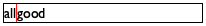
Обе интерпретации - прекрасный выбор, но оказывается, что использование второй значительно упрощает разработку программы. Остальная часть этого раздела демонстрирует этот момент, демонстрируя одновременное использование списков внутри структур. Чтобы правильно оценить урок, вы должны были выполнить упражнения из раздела Графический Редактор.
; Lo1s -> Lo1s ; produces a reverse version of the given list (check-expect (rev (cons "a" (cons "b" (cons "c" '())))) (cons "c" (cons "b" (cons "a" '())))) (define (rev l) l)
l
(first l)
(rest l)
(rev (rest l))
(rev l)
(cons "a" '())
"a"
'()
'()
(cons "a" '())
(cons "a" (cons "b" (cons "c" '())))
"a"
(cons "b" (cons "c" '()))
(cons "c" (cons "b" '()))
(cons "c" (cons "b" (cons "a" '()))) Рисунок 71: Табулирование для rev
; Lo1s 1String -> Lo1s ; creates a new list by adding s to the end of l (check-expect (add-at-end (cons "c" (cons "b" '())) "a") (cons "c" (cons "b" (cons "a" '())))) (define (add-at-end l s) l)
(define (add-at-end l s) (cond [(empty? l) ...] [else (... (first l) ... ... (add-at-end (rest l) s) ...)]))
(add-at-end '() s)
(define (add-at-end l s) (cond [(empty? l) (cons s '())] [else (cons (first l) (add-at-end (rest l) s))]))
Упражнение 177. Разработайте функцию create-editor. Функция использует две строки и создает Editor(редактор). Первая строка - это текст слева от курсора, а вторая строка - это текст справа от курсора. Остальная часть раздела полагается на эту функцию.
(define HEIGHT 20) ; the height of the editor (define WIDTH 200) ; its width (define FONT-SIZE 16) ; the font size (define FONT-COLOR "black") ; the font color (define MT (empty-scene WIDTH HEIGHT)) (define CURSOR (rectangle 1 HEIGHT "solid" "red"))
; Editor -> Image ; renders an editor as an image of the two texts ; separated by the cursor (define (editor-render e) MT) ; Editor KeyEvent -> Editor ; deals with a key event, given some editor (define (editor-kh ed ke) ed)
; main : String -> Editor ; launches the editor given some initial string (define (main s) (big-bang (create-editor s "") [on-key editor-kh] [to-draw editor-render]))
(check-expect (editor-kh (create-editor "" "") "e") (create-editor "e" "")) (check-expect (editor-kh (create-editor "cd" "fgh") "e") (create-editor "cde" "fgh"))
Прежде чем продолжить чтение, вы должны составить примеры, иллюстрирующие, как работает editor-kh, когда вы нажимаете клавишу Backspace ("\b"), чтобы удалить какую-то букву, клавиши со стрелками "left"(влево) и "right"(вправо) для перемещения курсора или некоторые другие клавиши со стрелками. Во всех случаях подумайте, что должно произойти, когда редактор пуст, когда курсор находится на левом или правом конце непустой строки в редакторе и когда он находится посередине. Даже если вы здесь не работаете с интервалами, все же неплохо разработать примеры для «крайних» случаев.
Когда у вас появились тестовые примеры, пора разработать шаблон. В случае editor-kh вы работаете с функцией, которая потребляет две сложные формы данных: одна - это структура, содержащая списки, другая - большое перечисление строк. Вообще говоря, этот вариант разработки требует улучшенного рецепта разработки; но в подобных случаях также ясно, что вы должны сначала иметь дело с одним из входов, а именно с нажатием клавиши.
(define (editor-kh ed k) (cond [(key=? k "left") ...] [(key=? k "right") ...] [(key=? k "\b") ...] [(key=? k "\t") ...] [(key=? k "\r") ...] [(= (string-length k) 1) ...] [else ...]))
Упражнение 178. Объясните, почему шаблон для editor-kh имеет дело с "\t" и "\r" перед проверкой строк длиной 1.
(define (editor-kh ed k) (cond [(key=? k "left") (editor-lft ed)] [(key=? k "right") (editor-rgt ed)] [(key=? k "\b") (editor-del ed)] [(key=? k "\t") ed] [(key=? k "\r") ed] [(= (string-length k) 1) (editor-ins ed k)] [else ed]))
(check-expect (editor-ins (make-editor '() '()) "e") (make-editor (cons "e" '()) '())) (check-expect (editor-ins (make-editor (cons "d" '()) (cons "f" (cons "g" '()))) "e") (make-editor (cons "e" (cons "d" '())) (cons "f" (cons "g" '()))))
На этом этапе вы должны сделать две вещи. Сначала запустите тесты для этой функции. Во-вторых, используйте интерпретацию Editor и абстрактно объясните, почему эта функция выполняет вставку. И, как будто этого недостаточно, вы можете сравнить это простое определение с определением из упражнения 84 и выяснить, почему другому(редактору) нужна вспомогательная функция, а в нашем определении нет.
; Editor -> Editor ; moves the cursor position one 1String left, ; if possible (define (editor-lft ed) ed) ; Editor -> Editor ; moves the cursor position one 1String right, ; if possible (define (editor-rgt ed) ed) ; Editor -> Editor ; deletes a 1String to the left of the cursor, ; if possible (define (editor-del ed) ed)
(place-image/align (beside (text "pre" FONT-SIZE FONT-COLOR) CURSOR (text "post" FONT-SIZE FONT-COLOR)) 1 1 "left" "top" MT)
; Editor -> Image (define (editor-render e) (place-image/align (beside (editor-text (editor-pre e)) CURSOR (editor-text (editor-post e))) 1 1 "left" "top" MT))
; Lo1s -> Image ; renders a list of 1Strings as a text image (define (editor-text s) (text "" FONT-SIZE FONT-COLOR))
(create-editor "pre" "post")
(check-expect (editor-text (cons "p" (cons "o" (cons "s" (cons "t" '()))))) (text "post" FONT-SIZE FONT-COLOR))
(define (editor-text s) (cond [(empty? s) ...] [else (... (first s) ... (editor-text (rest s)) ...)]))
Упраженение 180. Разработайте editor-text без использования implode.
(define (editor-render ed) (place-image/align (beside (editor-text (reverse (editor-pre ed))) CURSOR (editor-text (editor-post ed))) 1 1 "left" "top" MT))
Примечание Современные приложения позволяют пользователям перемещать курсор с помощью мыши (или других устройств на основе жестов). Хотя в принципе возможно добавить эту возможность в ваш редактор, мы подождем, до раздела Графический редактор с мышью.
11 Разработка Композиции
К настоящему времени вы знаете, что программы - это сложные продукты, и что их создание требует разработки множества сотрудничающих функций. Такое сотрудничество хорошо работает, если разработчик знает, когда создавать несколько функций и как объединить эти функции в одну программу.
Вы несколько раз сталкивались с необходимостью разрабатывать взаимосвязанные функции. Иногда постановка задачи подразумевает несколько разных задач, и каждая задача лучше всего реализуется с помощью функции. В других случаях определение данных может ссылаться на другое, и в этом случае функция, обрабатывающая данные первого типа, полагается на функцию, обрабатывающую последующий тип.
В этой главе мы представляем несколько сценариев, которые требуют разработки программ, состоящих из множества функций. Чтобы поддержать такую разработку, в главе представлены некоторые неформальные рекомендации по разделению функций и их соединению. Однако, поскольку эти примеры требуют сложных форм списков, эта глава начинается с раздела, посвященного краткой нотации списков.
11.1 Функция list
На этом этапе вы должны были устать писать так много cons только для того, чтобы создать список, особенно для списков, содержащих кучу значений. К счастью, у нас есть для вас Вы закончили BSL. Пришло время использовать меню «Язык» и выбрать “Beginning Student with List Abbreviations”(Начинающий студент со списком сокращений) для вашего обучения. дополнительный язык обучения, который предоставляет механизмы для упрощения этой части жизни программиста. BSL+ тоже делает то же самое
(list 0 1 2 3 4 5 6 7 8 9)
(list (list "bob" 0 "a") (list "carl" 1 "a") (list "dana" 2 "b") (list "erik" 3 "c") (list "frank" 4 "a") (list "grant" 5 "b") (list "hank" 6 "c") (list "ian" 7 "a") (list "john" 8 "d") (list "karel" 9 "e"))
11.2 Составные функции
Разработайте одну функцию для каждой задачи. Сформулируйте определения вспомогательных функций для каждой зависимости между величинами в задаче.
Разработайте один шаблон для каждого определения данных. Сформулируйте определения вспомогательных функций, когда одно определение данных указывает на второе определение данных.
-
Если композиция значений требует знания определенной области применения - например, составление двух (компьютерных) изображений, бухгалтерский учет, музыка или наука - разработайте вспомогательную функцию.
-
Если композиция значений требует анализа имеющихся значений - например, зависит от положительного, нулевого или отрицательного числа - используйте выражение cond. Если cond выглядит сложным, создайте вспомогательную функцию, аргументы которой являются выражениями шаблона, а тело - выражением cond.
-
Если композиция значений должна обрабатывать элемент из определения данных ссылающихся на себя - список, натуральное число или что-то подобное - создайте вспомогательную функцию.
-
Если что-то не удается, вам может потребоваться разработать более общую функцию и определить основную функцию как конкретное использование общей функции. Это предложение звучит нелогично, но оно используется в удивительно большом количестве случаев.
Последние два критерия - это ситуации, которые мы не обсуждали подробно, хотя примеры уже встречались. В следующих двух разделах эти принципы проиллюстрированы дополнительными примерами.
Списка пожеланий
Поддерживайте список заголовков функций, которые должны быть разработаны для завершения программы. Записывание полных заголовков функций гарантирует, что вы сможете протестировать те части программ, которые вы закончили, что полезно, даже если многие тесты не пройдут. Конечно, когда список пожеланий пуст, все тесты должны пройти, и все функции должны быть покрыты тестами.
11.3 Вспомогательные функции, которые повторяются
Людям нужно все время сортировать вещи, и программам тоже. Инвестиционные консультанты сортируют портфели по прибыли, которую приносит каждый холдинг. Игровые программы сортируют списки игроков по количеству очков. А почтовые программы сортируют сообщения по дате, отправителю или другому критерию.
Пример Задачи Разработайте функцию, которая сортирует список вещественных чисел.
; List-of-numbers -> List-of-numbers ; produces a sorted version of alon (define (sort> alon) alon)
; List-of-numbers -> List-of-numbers ; rearranges alon in descending order (check-expect (sort> '()) '()) (check-expect (sort> (list 3 2 1)) (list 3 2 1)) (check-expect (sort> (list 1 2 3)) (list 3 2 1)) (check-expect (sort> (list 12 20 -5)) (list 20 12 -5)) (define (sort> alon) alon)
(define (sort> alon) (cond [(empty? alon) ...] [else (... (first alon) ... ... (sort> (rest alon)) ...)]))
Очевидно, что вставить число в отсортированный список - непростая задача. Требуется поиск по отсортированному списку, чтобы найти нужное место для элемента. Поиск в любом списке требует вспомогательной функции, потому что списки имеют произвольный размер и, согласно пункту 3 предыдущего раздела, обработка значений произвольного размера требует разработки вспомогательной функции.
; Number List-of-numbers -> List-of-numbers ; inserts n into the sorted list of numbers alon (define (insert n alon) alon)
Стоп! Протестируйте программу как есть. Некоторые тестовые примеры проходят успешно, а некоторые - нет. Это прогресс. Следующим шагом в её разработке является создание функциональных примеров. Поскольку первым входом insert является любое число, мы используем 5 и используем определение данных для List-of-numbers(списка чисел), чтобы составить примеры для второго входа.
(check-expect (insert 5 '()) (list 5))
(check-expect (insert 5 (list 6)) (list 6 5)) (check-expect (insert 5 (list 4)) (list 5 4))
(check-expect (insert 12 (list 20 -5)) (list 20 12 -5))
Обратите внимание на то, чему нас учит развитие примеров. Функция insert должна найти первое число, которое меньше заданного n. Когда такого числа нет, функция в конечном итоге достигает конца списка и должна добавить n в конец. Теперь, прежде чем мы перейдем к шаблону, вам следует поработать несколько дополнительных примеров. Для этого вы можете использовать дополнительные примеры для sort>.
(define (insert n alon) (cond [(empty? alon) ...] [else (... (first alon) ... ... (insert n (rest alon)) ...)]))
Чтобы заполнить пробелы в шаблоне insert, мы снова действуем индивидуально. Первый случай касается пустого списка. Согласно первому примеру (list n) - это выражение, необходимое в первом предложении cond, потому что оно создает отсортированный список из n и alon.
(insert 7 (list 6 5 4))
(insert 0 (list 6 2 1 -1))
-
Если это так, все элементы в alon меньше n, потому что alon уже отсортирован. Ответ в этом случае будет (cons n alon).
-
Если, однако, n меньше, чем (first alon), то функция еще не нашла подходящего места для вставки n в alon. Первый элемент результата должен быть (first alon), а n должен быть вставлен в (rest alon). Конечный результат в этом случае будетпотому что этот список содержит n и все элементы alon в отсортированном порядке - это то, что нам нужно.
На рис. 72 представлена полная программа сортировки. Скопируйте её в область определений DrRacket, снова добавьте тестовые примеры и протестируйте программу. Все тесты должны сейчас пройти, и они должны охватывать все выражения.
Терминология Эта конкретная программа сортировки известна в литературе по программированию как сортировка вставкой. Позже мы изучим альтернативные способы сортировки списков, используя совершенно другую стратегию проектирования.
; List-of-numbers -> List-of-numbers ; produces a sorted version of l (define (sort> l) (cond [(empty? l) '()] [(cons? l) (insert (first l) (sort> (rest l)))])) ; Number List-of-numbers -> List-of-numbers ; inserts n into the sorted list of numbers l (define (insert n l) (cond [(empty? l) (cons n '())] [else (if (>= n (first l)) (cons n l) (cons (first l) (insert n (rest l))))])) Рисунок 72: Сортировака списка чисел
Упражнение 186. Еще раз взгляните на Интермеццо 1: Язык для начинающих студентов, интермеццо, которое представляет BSL и способы составления тестов. Один из последних - это check-satisfied, которая определяет, удовлетворяет ли выражение определенному свойству. Используйте sorted>? из упражнения 145 чтобы переформулировать тесты для sort> с check-satisfied.
; List-of-numbers -> List-of-numbers ; produces a sorted version of l (define (sort>/bad l) (list 9 8 7 6 5 4 3 2 1 0))
Примечания (1) Что может вас удивить, так это то, что мы определяем функцию для создания теста. В реальном мире этот шаг обычен, и иногда вам действительно нужно разработать функции для тестов - с их собственными тестами и всем остальным. (2) Формулировать тесты с помощью check-satisfied иногда проще, чем с помощью check-expect (или других форм), и это также немного более общий характер. Когда предикат полностью описывает отношения между всеми возможными входами и выходами функции, компьютерщики говорят о спецификации. Указание с помощью lambda объясняет, как полностью специфицировать sort>.
(define-struct gp [name score]) ; A GamePlayer is a structure: ; (make-gp String Number) ; interpretation (make-gp p s) represents player p who ; scored a maximum of s points
(define-struct email [from date message]) ; An Email Message is a structure: ; (make-email String Number String) ; interpretation (make-email f d m) represents text m ; sent by f, d seconds after the beginning of time
; Number List-of-numbers -> Boolean (define (search n alon) (cond [(empty? alon) #false] [else (or (= (first alon) n) (search n (rest alon)))]))
Разработайте функцию search-sorted, которая определяет, входит ли число в отсортированный список чисел. Функция должна использовать тот факт, что список отсортирован.
Упражнение 190. Разработайте функцию prefixes, которая потребляет список из 1String и создает список всех префиксов. Список p является prefix(префиксом) l, если p и l одинаковы для всех элементов в p. Например, (list "a" "b" "c") является префиксом самого себя и (list "a" "b" "c" "d").
Разработайте функцию suffixes(суффиксы), которая потребляют список из 1Strings и производит все suffixes(суффиксы). Список s является suffix(суффиксом) l, если s и l одинаковы с конца до всех элементов в s. Например, (list "b" "c" "d") является суффиксом самого себя и (list "a" "b" "c" "d").
11.4 Вспомогательные функции, которые обобщены
Иногда вспомогательная функция - это не просто небольшая вспомогательная функция, а решение более общей проблемы. Такие вспомогательные средства необходимы, когда формулировка проблемы слишком узкая. Прорабатывая шаги рецепта проектирования, программисты могут обнаружить, что «естественное» решение неверно. Анализ этого неработающего решения может предложить несколько иную, но более общую постановку проблемы, а также простой способ использования решения общей проблемы для исходной.
Пример Задачи Создайте функцию, которая добавляет многоугольник в заданную сцену.
Многоугольник(polygon) - это плоская фигура, у которой не менее трех точек (не на прямой), соединенных тремя прямыми сторонами.
(define triangle-p (list (make-posn 20 10) (make-posn 20 20) (make-posn 30 20)))
(define square-p (list (make-posn 10 10) (make-posn 20 10) (make-posn 20 20) (make-posn 10 20)))
Дело в том, что наивно выбранное представление данных - простые списки Posns - может неправильно представлять предполагаемую информацию. Изменение определения данных во время первоначального исследования - это нормально; действительно, иногда такие изменения становятся необходимыми во время остальной части процесса проектирования. Однако пока вы придерживаетесь систематического подхода, изменения в определении данных могут естественным образом распространяться на остальную часть разработки.
; a plain background image (define MT (empty-scene 50 50)) ; Image Polygon -> Image ; renders the given polygon p into img (define (render-poly img p) img)
(check-expect (render-poly MT triangle-p) (scene+line (scene+line (scene+line MT 20 10 20 20 "red") 20 20 30 20 "red") 30 20 20 10 "red"))
(check-expect (render-poly MT square-p) (scene+line (scene+line (scene+line (scene+line MT 10 10 20 10 "red") 20 10 20 20 "red") 20 20 10 20 "red") 10 20 10 10 "red"))
Действительно, лучше формулировать условия в терминах встроенных предикатов и селекторов, чем ваших собственных (рекурсивных) функций. См. Интермеццо 5: Стоимость вычислений для объяснения
(define (render-poly img p) (cond [(empty? (rest (rest (rest p)))) (... (first p) ... img ... ... (second p) ... ... (third p) ...)] [else (... (first p) ... ... (render-poly img (rest p)) ...)]))
; Image Posn Posn -> Image ; draws a red line from Posn p to Posn q into im (define (render-line im p q) im)
(render-line (render-line (render-line MT (first p) (second p)) (second p) (third p)) (third p) (first p))
(define (render-poly img p) (cond [(empty? (rest (rest (rest p)))) (render-line (render-line (render-line MT (first p) (second p)) (second p) (third p)) (third p) (first p))] [else (render-line (render-poly img (rest p)) (first p) (second p))]))
; Image Posn Posn -> Image ; renders a line from p to q into img (define (render-line img p q) (scene+line img (posn-x p) (posn-y p) (posn-x q) (posn-y q) "red"))
Наконец, мы должны протестировать функции. Тесты на render-poly не проходят. С одной стороны, провал теста является удачным, потому что цель тестов - найти проблемы до того, как они повлияют на обычных потребителей. С другой стороны, недостаток вызывает сожаление, потому что мы следовали рецепту разработки, мы сделали довольно естественный выбор, но функция не работает.
> (render-poly MT square-p) 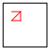
> (render-poly MT (rest square-p)) 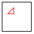
Хотя эксперименты подтверждают проблемы нашей конструкции, они также предполагают, что функция «почти правильная». Она соединяет последовательные точки, указанные в списке Posns, а затем рисует линию от первого до последнего Posn замыкающего треугольника. Если бы она пропустила этот последний шаг, функция просто «соединила бы точки» и, таким образом, нарисовала бы «открытый» многоугольник. Соединив первую и последнюю точки, он сможет завершить свою задачу.
-
Решите более общую проблему.
-
Используйте решение этой общей проблемы, чтобы решить исходную.
Пример задачи Создайте функцию, которая рисует связи между заданным набором точек, на заданной сцене.
; Image NELoP -> Image ; connects the dots in p by rendering lines in img (define (connect-dots img p) MT)
(check-expect (connect-dots MT triangle-p) (scene+line (scene+line MT 20 20 30 20 "red") 20 10 20 20 "red"))
Упражнение 191. Адаптируйте второй пример для функции render-poly для connect-dots.
(define (connect-dots img p) (cond [(empty? (rest p)) (... (first p) ...)] [else (... (first p) ... ... (connect-dots img (rest p)) ...)]))
(define (connect-dots img p) (cond [(empty? (rest p)) img] [else (render-line (connect-dots img (rest p)) (first p) (second p))]))
И наоборот, мы говорим, что connect-dots обобщает render-poly. Каждый вход для последней также является входом для первой. Или, с точки зрения определений данных, каждый Polygon(полигон) также является NELoP. Но есть много NELoPs, которые не являются Polygons(полигонами). Чтобы быть точным, все списки Posns, которые содержат два элемента или один, принадлежат NELoP, но не Polygon. Однако ключевой вывод для вас заключается в том, что тот факт, что функция должна иметь дело с большим количеством входных данных, чем другая функция, не означает, что первая более сложна, чем вторая; обобщения часто упрощают определения функций.
; Image Polygon -> Image ; adds an image of p to img (define (render-poly img p) (render-line (connect-dots img p) (first p) (last p)))
(define (last p) (cond [(empty? (rest p)) (... (first p) ...)] [else (... (first p) ... (last (rest p)) ...)]))
; Image Polygon -> Image ; adds an image of p to MT (define (render-poly img p) (render-line (connect-dots img p) (first p) (last p))) ; Image NELoP -> Image ; connects the Posns in p in an image (define (connect-dots img p) (cond [(empty? (rest p)) MT] [else (render-line (connect-dots img (rest p)) (first p) (second p))])) ; Image Posn Posn -> Image ; draws a red line from Posn p to Posn q into im (define (render-line im p q) (scene+line im (posn-x p) (posn-y p) (posn-x q) (posn-y q) "red")) ; Polygon -> Posn ; extracts the last item from p (define (last p) (cond [(empty? (rest (rest (rest p)))) (third p)] [else (last (rest p))])) Рисунок 73: Рисование многоугольника
Таким образом, развитие render-poly естественным образом заставляет нас задуматься над общей проблемой соединения списка последовательных точек. Затем мы можем решить исходную проблему, определив функцию, которая объединяет общую функцию с другими вспомогательными функциями. Таким образом, программа состоит из относительно простой основной функции - render-poly - и сложных вспомогательных функций, которые выполняют большую часть работы. Вы снова и снова будете видеть, что такой подход к разработке является обычным и хорошим методом для разработки и организации программ.
Упражнение 194. Измените connect-dots так, чтобы они потребляли дополнительный Posn, котый соединен с последним Posn. Затем измените render-poly, чтобы использовать эту новую версию connect-dots.
Естественно, такие функции, как last, доступны в полноценном языке программирования, а что-то вроде render-poly доступно в библиотеке 2htdp/image . Если вам интересно, почему мы только что разработали эти функции, обратите внимание на названия книги и этого раздела. Цель не в том, чтобы (просто) разработать полезные функции, а в том, чтобы систематически изучить, как создается код. В частности, этот раздел посвящен идее обобщения в процессе проектирования; подробнее об этой идее см. Абстракция и Аккумуляторы.
12 Проекты: Списки(Lists)
В этой главе представлены несколько расширенных упражнений, каждое из которых направлено на укрепление вашего понимания элементов разработки: разработка пакетных В этой главе используется библиотека 2htdp/batch-io . и интерактивных программ, разработка композиций, списки пожеланий по разработке и рецепт разработки для функций. Первый раздел посвящен проблемам, связанным с реальными данными: английскими словарями и библиотеками iTunes. Проблема словесных игр требует двух разделов: один для иллюстрации разработки композиции, а другой для решения сути проблемы. Остальные разделы посвящены играм и конечным автоматам.
12.1 Данные из реального мира: словари
Информация в реальном мире имеет тенденцию поступать в больших количествах, поэтому имеет смысл использовать программы для ее обработки. Например, словарь не просто десяток слов, а сотни тысяч. Если вы хотите обработать такие большие объемы информации, вы должны тщательно спроектировать программу, используя небольшие примеры. Убедившись, что программы работают правильно, вы По вопросам производительности см. Генеративная рекурсия. С этого момента основное внимание уделяется систематическому проектированию программ, чтобы вы могли должным образом исследовать проблемы с производительностью. запускаете их на реальных данных, чтобы получить реальные результаты. Если программа слишком медленная для обработки такого большого количества данных, подумайте о каждой функции и о том, как она работает. Спросите, можете ли вы избавиться от лишних вычислений.
; On OS X: (define LOCATION "/usr/share/dict/words") ; On LINUX: /usr/share/dict/words or /var/lib/dict/words ; On WINDOWS: borrow the word file from your Linux friend ; A Dictionary is a List-of-strings. (define AS-LIST (read-lines LOCATION)) Рисунок 74: Чтение словаря
На рис. 74 показана одна строка кода, необходимая для чтения во всем словаре английского языка. Чтобы получить представление о том, насколько велики такие словари, адаптируйте код из рисунка для вашего конкретного компьютера и используйте length, чтобы определить, сколько слов в вашем словаре. Сегодня, 25 июля 2017 года, у нас 235,886 слов.
; A Letter is one of the following 1Strings: ; – "a" ; – ... ; – "z" ; or, equivalently, a member? of this list: (define LETTERS (explode "abcdefghijklmnopqrstuvwxyz"))
Упражнение 195. Разработайте функцию starts-with# которая потребляет Letter(Букву) и Dictionary(Словарь), а затем подсчитывает, сколько слов в данном Dictionary начинается с данной Letter(Буквы). Как только вы узнаете, что ваша функция работает, определите, сколько слов в словаре вашего компьютера начинается с "e", а сколько - с "z".
Упражнение 196. Разработайте count-by-letter. Функция использует Dictionary(словарь) и подсчитывает, как часто каждая буква используется в качестве первой буквы слова в данном словаре. Её результатом является список Letter-Counts, фрагмент данных, который объединяет буквы и числа.
Создав функцию, определите, сколько слов появляется для всех букв в словаре вашего компьютера.
Замечание по Проектным Решениям Альтернативой является создание вспомогательной функции, которая использует список букв и словарь и создает список Letter-Counts, который сообщает, как часто данные буквы встречаются в словаре первыми. Вы, конечно, можете повторно использовать свое решение из упражнения 195. Подсказка Если вы разрабатываете этот вариант, обратите внимание, что функция использует два списка, что требует решения проблемы проектирования, которая подробно описана в разделе Одновременная обработка. Подумайте о Dictionary как о элементарной части данных, которая находится в пути и передается по мере необходимости в starts-with#.
Упражнение 197. Разработайте most-frequent. Функция использует Dictionary. Она производит Letter-Count для буквы, которая чаще всего встречается первой в данном Dictionary.
Какая буква наиболее часто используется в словаре вашего компьютера и как часто?
-
Разработайте функцию, которая выбирает пару с максимальным count(количеством).
-
Разработайте функцию, которая выбирает первую из отсортированного списка пар.
Упражнение 198. Разработайте words-by-first-letter. Функция использует Dictionary и создает список Dictionarys(словарей), по одному на Letter(букву).
(check-expect (most-frequent AS-LIST) (most-frequent.v2 AS-LIST))
-
Одна альтернатива - исключить полученные пустые словари из общего результата. Это упрощает как тестирование функции, так и разработку most-frequent.v2, но также требует разработки вспомогательной функции..
-
Другая - включить '() в результат поиска слов определенной буквы, даже если их нет. Эта альтернатива позволяет избежать вспомогательной функции, необходимой для первой альтернативы, но усложняет разработку most-frequent.v2. Конец
Примечание о промежуточных данных и вырубке леса(Deforestation) Эта вторая версия функции подсчета слов вычисляет желаемый результат путем создания большой промежуточной структуры данных, которая не служит никакой реальной цели, кроме подсчета ее частей. Иногда язык программирования устраняет их автоматически с помощью fusing, объединяя две функции в одну, преобразование программ, которое также называется deforestation(вырубкой леса). Если вы знаете, что язык не вырубает леса из программ, подумайте об исключении таких структур данных, если программа не обрабатывает данные достаточно быстро.
12.2 Данные в реальном мире: iTunes
Программное обеспечение Apple iTunes широко используется для сбора музыки, видео, телешоу и т. Д. Вы можете проанализировать информацию, которую собирает ваше приложение iTunes. На самом деле извлечь его базу данных довольно просто. Выберите в приложении меню File, выберите Library, а затем Export - и вуаля, вы можете экспортировать так называемое XML-представление информации iTunes. Поскольку такие проприетарные форматы регулярно меняются, книга поставляется с двумя файлами примеров: itunes.xml и itunes2.xml. Вы можете использовать их вместо своих. Обработка XML подробно рассматривается в Проект: The Commerce of XML; здесь мы полагаемся на библиотеку 2htdp/itunes , чтобы получить информацию. В частности, библиотека позволяет вам извлекать музыкальные треки, содержащиеся в вашей медиатеке iTunes.
-
Track ID, никальный идентификатор дорожки по отношению к вашей библиотеке, например: 442
-
Name, название трека, Wild Child
-
Artist, продюсирующий артист, Enya
-
Album, название альбома, которому он принадлежит, A Day Without
-
Genre, музыкальный жанр, которому присвоен трек, New Age
-
Kind, кодировка музыки, MPEG audio file
-
Size, размер файла, 4562044
-
Total Time, длина трека в миллисекундах, 227996
-
Track Number,положение трека в альбоме, 2
-
Track Count, количество треков в альбоме, 11
-
Year, год выпуска, 2000
-
Date Added, когда добавляли трек, 2002-7-17 3:55:14
-
Play Count, колько раз было сыграно, 20
-
Play Date, огда трек последний раз воспроизводился, 3388484113 Unix seconds
-
Play Date UTC,когда он последний раз воспроизводился, 2011-5-17 17:35:13
Как всегда, первая задача - выбрать представление данных BSL для этой информации. В этом разделе мы используем два представления музыкальных треков: базирующееся на структуре и базирующееся на списке. В дополнение к библиотеке 2htdp/batch-io в этом разделе используется библиотека 2htdp/itunes . В то время как первое записывает фиксированное количество атрибутов на дорожку и только в том случае, если доступна вся информация, последнее поставляется с любой доступной информацией, представленной в виде данных. Каждое хорошо служит конкретному использованию; для некоторых целей полезны оба представления.
; the 2htdp/itunes library documentation, part 1: ; An LTracks is one of: ; – '() ; – (cons Track LTracks) (define-struct track [name artist album time track# added play# played]) ; A Track is a structure: ; (make-track String String String N N Date N Date) ; interpretation An instance records in order: the track's ; title, its producing artist, to which album it belongs, ; its playing time in milliseconds, its position within the ; album, the date it was added, how often it has been ; played, and the date when it was last played (define-struct date [year month day hour minute second]) ; A Date is a structure: ; (make-date N N N N N N) ; interpretation An instance records six pieces of information: ; the date's year, month (between 1 and 12 inclusive), ; day (between 1 and 31), hour (between 0 ; and 23), minute (between 0 and 59), and ; second (also between 0 and 59). Рисунок 75: Представление треков iTunes в виде структур (структуры)
; Any Any Any Any Any Any Any Any -> Track or #false ; creates an instance of Track for legitimate inputs ; otherwise it produces #false (define (create-track name artist album time track# added play# played) ...) ; Any Any Any Any Any Any -> Date or #false ; creates an instance of Date for legitimate inputs ; otherwise it produces #false (define (create-date y mo day h m s) ...) ; String -> LTracks ; creates a list-of-tracks representation from the ; text in file-name (an XML export from iTunes) (define (read-itunes-as-tracks file-name) ...) Рисунок 76: Представление треков iTunes в виде структур (функции)
На рисунках 75 и 76 представлено структурное представление треков, реализованное библиотекой 2htdp/itunes . Структурный тип track состоит из восьми полей, каждое из которых представляет определенное свойство дорожки. Большинство полей содержат атомарные типы данных, такие как Strings и Ns; другие содержат Dates(даты), которые представляют собой структурный тип с шестью полями. Библиотека 2htdp/itunes экспортирует все предикаты и селекторы для структурных типов track и date, но вместо конструкторов предоставляет проверяющие конструкторы.
Последним элементом описания библиотеки 2htdp/itunes является функция, которая считывает описание библиотеки iTunes XML и предоставляет список треков, LTracks. После того, как вы экспортировали библиотеку XML из какого-либо приложения iTunes, вы можете запустить следующий фрагмент кода, чтобы получить все записи:
; modify the following to use your chosen name (define ITUNES-LOCATION "itunes.xml") ; LTracks (define itunes-tracks (read-itunes-as-tracks ITUNES-LOCATION))
Упражнение 199. Хотя важные определения данных уже предоставлены, первый шаг рецепта проектирования еще не завершен. Придумайте примеры Dates, Tracks и LTracks. Эти примеры пригодятся в следующих упражнениях в качестве исходных данных.
Упражнение 200. Разработайте функцию total-time, которая потребляет элемент LTracks и производит(возвращае) общее время воспроизведения. После завершения программы вычислите общее время воспроизведения вашей коллекции iTunes.
Упражнение 201. Разрабтайте select-all-album-titles. Функция использует LTracks и создает список названий альбомов в виде списка строк List-of-strings.
Также разработайте функцию create-set. Она использует List-of-strings и создает тот, который содержит каждую String(строку) из данного списка ровно один раз. Подсказка Если String s находится в начале данного списка и также встречается в оставшейся(rest) части списка, create-set не сохраняет s.
Наконец, создайте select-album-titles/unique, которая потребляет LTracks и создает список уникальных названий альбомов. Используйте эту функцию, чтобы определить названия всех альбомов в вашей коллекции iTunes, а также узнать, сколько отдельных альбомов она содержит.
Упражнение 202. Разработайте select-album. Функция использует название альбома и LTracks. Она извлекает из последнего список треков, принадлежащих данному альбому.
Упражнение 203. Разработайте select-album-date. Функция использует название альбома, дату и LTracks. Она извлекает из последнего список треков, которые принадлежат данному альбому и были воспроизведены после указанной даты. Подсказка Вы должны разработать функцию, которая использует две Date(даты) и определяет, происходит ли первая раньше второй.
Упражнение 204. Разработайте select-albums. Функция потребляет элемент LTracks. Она производит список LTracks, по одному на альбом. Каждый альбом уникально идентифицируется по названию и отображается в результатах только один раз. Подсказки (1) Вам нужно использовать некоторые решения предыдущих упражнений. (2) Функция группирования использует два списка: список названий альбомов и список треков; она считает последний атомарным, пока он не будет передан вспомогательной функции. См. Упражнение 196.
Терминология Функции, имена которых начинаются с select-, являются так называемыми database queries(запросами к базе данных). См. Проект: База данных для более подробной информации. Конец
; the 2htdp/itunes library documentation, part 2: ; An LLists is one of: ; – '() ; – (cons LAssoc LLists) ; An LAssoc is one of: ; – '() ; – (cons Association LAssoc) ; ; An Association is a list of two items: ; (cons String (cons BSDN '())) ; A BSDN is one of: ; – Boolean ; – Number ; – String ; – Date ; String -> LLists ; creates a list of lists representation for all tracks in ; file-name, which must be an XML export from iTunes (define (read-itunes-as-lists file-name) ...) Рисунок 77: Представление треков iTunes в виде списков
На рисунке 77 показано, как библиотека 2htdp/itunes представляет треки списками. LLists - это список представлений дорожек(треков), каждый из которых представляет собой список списков, объединяющих String(строки) с четырьмя видами значений. Функция read-itunes-as-lists читает библиотеку iTunes XML и создает элемент списков LLists. Следовательно, вы получите доступ ко всей информации о треках, если добавите в свою программу следующие определения:
; modify the following to use your chosen name (define ITUNES-LOCATION "itunes.xml") ; LLists (define list-tracks (read-itunes-as-lists ITUNES-LOCATION))
Упражнение 205. Разработайте примеры LAssoc и LLists, то есть списковое представление треков и списки таких треков.
Упражнение 206. Разработайте функцию find-association. Она использует три аргумента: String с именем key, LAssoc и элемент Any с именем default. Она создает первую Association(ассоциацию), первый элемент которой равен key(ключу), или default, если такой Association(ассоциации) нет. Association.
Примечание После того, как вы создадите эту функцию, прочтите assoc.
Упражнение 207. Разработайте total-time/list, которая потребляет списки LLists и выдает общее количество проигранного. Подсказка Сначала решите упражнение 206.
После того, как вы закончите разработку, вычислите общее время воспроизведения вашей коллекции iTunes. Сравните этот результат со временем, которое вычисляет функция total-time из упражнения 200. Почему есть разница?
Упражнение 208. Разработайте boolean-attributes. Функция использует списки LLists и создает Strings(строки), связанные(ассоциированные) с Boolean(логическим) атрибутом. Подсказка Используйте create-set из упражнения 201.
Когда вы закончите, определите, сколько логических атрибутов ваша медиатека iTunes использует для своих треков. Имеют ли они смысл?
Примечание Представление на основе списка немного менее организовано, чем представление на основе структуры. Слово semi-structured(полуструктурированный) иногда используется в этом контексте. Такие списковые представления содержат свойства, которые появляются редко и, следовательно, не соответствуют типу структуры. Люди часто используют такие представления, чтобы исследовать неизвестную информацию, а затем вводить структуры, когда формат хорошо известен. Разработайте функцию track-as-struct, которая по возможности преобразует LAssoc в Track. Конец
12.3 Игры в Слова, Иллюстрирующие Композицию
Пример задачи Для данного слова найдите все слова, состоящие из одинаковых букв. Например, “cat”(кошка) также означает “act.”(действовать)
ader
aedr
aerd
adre
arde
ared
daer
eadr
eard
dare
rade
raed
dear
edar
erad
drae
rdae
read
dera
edra
erda
drea
rdea
reda
Примечание Если слово содержит одну и ту же букву дважды, набор всех перестановок может содержать несколько копий одной и той же строки. Для наших целей это приемлемо. Для реалистичной программы вы можете захотеть избежать дублирования записей, используя наборы вместо списков. См. Замечание о списках и наборах. Конец
Систематическое перечисление всех возможных вариантов является задачей программы, как и поиск в англоязычном словаре. См. Раздел Данные реального мира: словари для получения информации о словарях реального мира. В этом разделе рассматривается разработка функции поиска, а решение другой проблемы остается следующему разделу. Разделив эти две задачи, первый раздел может сосредоточиться на высокоуровневых идеях систематического проектирования программ.
Давайте представим на мгновение, как мы могли бы решить проблему вручную. Если у вас было достаточно времени, вы могли бы перечислить все возможные варианты расположения всех букв в данном слове, а затем просто выбрать те варианты, которые также встречаются в словаре. Ясно, что программа тоже может действовать таким же образом, и это предполагает естественную разработку через композицию, но, как всегда, мы действуем систематически и начинаем с выбора представления данных для наших входных и выходных данных.
; String -> List-of-strings ; finds all words that use the same letters as s (define (alternative-words s) ...)
(check-member-of (alternative-words "cat") (list "act" "cat") (list "cat" "act"))
-
Первый - о тестировании. Предположим, мы использовали слово “rat”(крыса), у которого есть три альтернативы: “rat”, “tar”(деготь) и “art”(искуство). В этом случае нам нужно было бы сформулировать шесть списков, каждый из которых мог бы быть результатом функции. Для такого слова, как “dear”(дорогой) с четырьмя возможными альтернативами, сформулировать тест еще сложнее.
-
Вторая проблема касается выбора словесного представления(предствления слов). Хотя String сначала выглядит естественным, примеры показывают, что некоторые из наших функций должны рассматривать слова как последовательности букв с возможностью их перестановки по желанию. Можно переставить буквы в String(строке), но очевидно, что списки букв лучше подходят для этой цели.
Предположим, мы хотим сформулировать тест для alternative-words и "rat". Из вышесказанного мы знаем, что результат должен содержать "rat", "tar" и "art", но мы не можем знать, в каком порядке эти слова появляются в результате.
; List-of-strings -> Boolean (define (all-words-from-rat? w) (and (member? "rat" w) (member? "art" w) (member? "tar" w)))
(check-satisfied (alternative-words "rat") all-words-from-rat?)
Замечание о сравнении данных и разработке Это обсуждение предполагает, что функция alternative-words создает набор(множество), а не список. Подробное обсуждение различий см. В разделе Примечания к спискам и наборам. Здесь достаточно знать, что наборы представляют собой совокупности значений безотносительно порядка значений или того, как часто эти значения встречаются. Когда язык не поддерживает представления наборов данных, программисты склонны прибегать к близкой альтернативе, такой как здесь представление списка строк. По мере роста программ этот выбор может преследовать программистов, но решение таких проблем является предметом второй книги. Конец
; List-of-strings -> Boolean (define (all-words-from-rat? w) (and (member? "rat" w) (member? "art" w) (member? "tar" w))) ; String -> List-of-strings ; finds all words that the letters of some given word spell (check-member-of (alternative-words "cat") (list "act" "cat") (list "cat" "act")) (check-satisfied (alternative-words "rat") all-words-from-rat?) (define (alternative-words s) (in-dictionary (words->strings (arrangements (string->word s))))) ; List-of-words -> List-of-strings ; turns all Words in low into Strings (define (words->strings low) '()) ; List-of-strings -> List-of-strings ; picks out all those Strings that occur in the dictionary (define (in-dictionary los) '()) Рисунок 78: Поиск альтернативных слов
; A Word is ... ; A List-of-words is ... ; Word -> List-of-words ; finds all rearrangements of word (define (arrangements word) (list word))
; String -> Word ; converts s to the chosen word representation (define (string->word s) ...) ; Word -> String ; converts w to a string (define (word->string w) ...)
Решив эти две небольшие проблемы, мы вернемся к разработке alternative-words. Теперь у нас есть: (1) сигнатура, (2) предназначение, (3) примеры и тест, (4) понимание нашего выбора представления данных и (5) идея того, как разложить проблему на две части. основные шаги.
(in-dictionary (arrangements s))
Стоп! Найдите сигнатуры для двух функций, чтобы убедиться, что композиция работает. Что именно нужно проверить?
(in-dictionary (... (arrangements (string->word s))))
(in-dictionary (words->strings (arrangements (string->word s))))
На рисунке 78 собраны все части. Следующие упражнения просят вас разработать остальные функции.
Упражнение 210. Завершите разработку функции words->strings, показанной на рисунке 78. Совет Используйте свое решение к упражнению 209.
Упражнение 211. Завершите разработку in-dictionary, показанной на рисунке 78. Совет См. Данные реального мира: словари чтобы узнать, как читать словарь.
12.4 Игры в слова - суть проблемы
Цель состоит в том, чтобы разработать arrangements - функцию, которая использует Word(слово) и создает список буквенных перестановок слова. Математический термин - это перестановки(permutations). Это расширенное упражнение усиливает потребность в подробных списках пожеланий, то есть в списке желаемых функций, который, кажется, увеличивается с каждой завершенной функцией.
; A Word is one of: ; – '() or ; – (cons 1String Word) ; interpretation a Word is a list of 1Strings (letters)
Упражнение 212. Запишите определение данных для List-of-words (списка слов). Придумайте примеры Words(слов) и List-of-words. Наконец, сформулируйте функциональный пример с помощью выше указанной функции check-expect. Вместо полного примера рассмотрите возможность работы со словом, состоящим всего из двух букв, скажем "d" и "e".
; Word -> List-of-words ; creates all rearrangements of the letters in w (define (arrangements w) (cond [(empty? w) ...] [else (... (first w) ... ... (arrangements (rest w)) ...)]))
-
Если ввод - это '(), есть только одна возможная перестановка ввода: слово '(). Следовательно, результатом является (list '()), список, который содержит пустой список как единственный элемент.
-
В противном случае в слове будет первая буква, и (first w) будет этой буквой. Кроме того, рекурсия дает список всех возможных перестановок для остальной части слова. Например, если список
(list "d" "e" "r")
Чтобы получить все возможные перестановки для всего списка, мы должны теперь вставить первый элемент, в нашем случае "d", во все эти слова между всеми возможными буквами и в начале и в конце.
(define (arrangements w) (cond [(empty? w) (list '())] [else (insert-everywhere/in-all-words (first w) (arrangements (rest w)))]))
Упражнение 213. Разработайте insert-everywhere/in-all-words. Она использует 1String и список слов. Результатом является список слов, подобный её второму аргументу, но с первым аргументом, вставленным в начале, между всеми буквами и в конце всех слов данного списка.
Начните с полного списка пожеланий. Дополните его тестами на пустые списки, список с однобуквенным словом и другой список с двухбуквенным словом и т.п. Прежде чем продолжить, внимательно изучите следующие три совета.
(3) Решение этого упражнения представляет собой серию функций. Терпеливо придерживайтесь рецепта разработки и систематически работайте над своим списком пожеланий.
Упражнение 214. Интегрируйте arrangements с частичной программой из Игра в слова, Илюстрация Композиции Убедившись, что весь набор тестов пройден, запустите её на некоторых из ваших любимых примеров.
12.5 Кормление червей
Червь(Worm), также известный как Змейка (Snake), - одна из старейших компьютерных игр. При запуске игры появляется червяк и кусок еды. Червь движется к стене. Не позволяйте ему достигать стены; в противном случае игра окончена. Вместо этого используйте клавиши со стрелками для управления движениями червя.
Цель игры - заставить червяка съесть как можно больше еды. По мере того, как червь поедает пищу, она становится длиннее; появляется все больше и больше сегментов. Как только кусок пищи переваривается, появляется другой кусок. Однако рост червя подвергает опасности самого червя. По мере того, как он растет достаточно долго, он может столкнуться с самим собой, и, если это произойдет, игра тоже окончена.
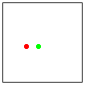 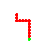 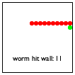
Рисунок 79: Играем в Червя
На рис. 79 показана последовательность снимков экрана, иллюстрирующих, как игра работает на практике. Слева вы видите начальную установку. Червь состоит из одного красного сегмента - головы. Он движется к еде, которая отображается в виде зеленого диска. На снимке экрана в центре показана ситуация, когда червь собирается съесть немного еды. На самом правом снимке экрана червь врезался в правую стену. Игра окончена; игрок набрал 11 очков.
Следующие упражнения помогут вам разработать и реализовать игру про червя. Подобно структурам в списках, эти упражнения показывают, как решать нетривиальную проблему с помощью итеративного уточнения. То есть вы не разрабатываете всю интерактивную программу сразу, а в несколько этапов, называемых итерациями. Каждая итерация добавляет детали и уточняет программу до тех пор, пока она не удовлетворит вас или вашего клиента. Если результат упражнений вас не устраивает, не стесняйтесь придумывать варианты.
Упражнение 215. Разработайте программный мир, программу, которая непрерывно перемещает односегментного червя и позволяет игроку управлять перемещением червя с помощью четырех основных клавиш со стрелками. Ваша программа должна использовать красный диск для визуализации одного-единственного сегмента червя. За каждый такт часов червяк должен двигаться на диаметр.
Подсказка (1) Перечитайте Разработка Программных Миров, чтобы вспомнить, как разрабатывать программные миры. Когда вы определяете функцию worm-main, используйте в качестве аргумента скорость/частоту(rate), с которой тикают часы. См. Документацию по on-tick о том, как описать эту скорость(rate). (2) При разработке представления данных для червя подумайте об использовании двух различных типов представлений: физического и логического. Физическое(physical) представление отслеживает фактическое физическое position(положение) червя на холсте; логическое(logical) подсчитывает, сколько сегментов (ширины) червя находится слева и сверху. Для какого из двух легче изменить внешний вид (размер сегмента червя, размер игрового поля) «игры»?
Упражнение 216. Измените свою программу из упражнения 215 так, чтобы она останавливалась, если червь достиг стен мира. Когда программа останавливается из-за этого условия, она должна визуализировать финальную сцену с текстом "worm hit border"(черввь ударил барьер) в нижнем левом углу сцены мира. Подсказка Вы можете использовать предложение stop-when в big-bang, чтобы отрендерить последний мир особым образом.
Упражнение 217. Разработайте представление данных для червей с хвостами. Хвост червя - это, возможно, пустая последовательность «связанных» сегментов. Здесь “connected”(связанный) означает, что координаты сегмента отличаются от координат его предшественника не более чем в одном направлении. Чтобы не усложнять задачу, относитесь ко всем сегментам - головным и хвостовым - одинаково.
Теперь измените свою программу из упражнения 215, чтобы приспособиться к многосегментному червю. Будьте проще: (1) ваша программа может отображать все сегменты червя как красные диски и (2) игнорировать тот факт, что червь может наехать на стену или себя. Подсказка Один из способов реализовать движение червя - добавить сегмент в том направлении, в котором он движется, и удалить последний.
; Posn -> Posn ; ??? (check-satisfied (food-create (make-posn 1 1)) not=-1-1?) (define (food-create p) (food-check-create p (make-posn (random MAX) (random MAX)))) ; Posn Posn -> Posn ; generative recursion ; ??? (define (food-check-create p candidate) (if (equal? p candidate) (food-create p) candidate)) ; Posn -> Boolean ; use for testing only (define (not=-1-1? p) (not (and (= (posn-x p) 1) (= (posn-y p) 1))))
Упражнение 218. Измените свою программу из упражнения 217 так, чтобы она останавливалась, если червь врезался в стены мира или сам в себя. Выведите на экран сообщение, подобное показанному в упражнении 216, чтобы объяснить, остановилась ли программа из-за удара червя о стену или из-за того, что он ударил сам себя.
Подсказки (1) Чтобы определить, собирается ли червь врезаться в себя, проверьте, будет ли положение головы совпадать с одним из его старых сегментов хвоста, если он будет двигаться. (2) Прочитайте о функции member?.
Упражнение 219. Дополните свою программу из упражнения 218 едой. В любой момент в коробке должен быть один кусок еды. Чтобы не усложнять задачу, кусок пищи имеет такой же размер, как сегмент червя. Когда голова червя находится в том же месте, что и еда, червь ест эту пищу, то есть хвост червя расширяется на один сегмент. Когда кусок еды съеден, другой появляется в другом месте.
Добавление еды в игру требует изменения представления данных о состояниях мира. Помимо червя, состояния теперь также включают представление еды, особенно ее текущего местоположения. Изменение игрового представления предлагает новые функции для работы с событиями, хотя эти функции могут повторно использовать функции червя (из упражнения 218) и их тестовые примеры. Это также означает, что обработчик тактов должен не только перемещать червя; кроме того, он должен управлять процессом приема пищи и созданием новой пищи.
Ваша программа должна размещать продукты на поле случайным образом. Чтобы сделать это правильно, вам понадобится метод проектирования, который вы раньше не видели, - так называемая генеративная рекурсия, которая представлена в Генеративная рекурсия, - поэтому мы представили эти функции на рисунке 80. Чтобы работать с random, прочитайте руководство или упражнение 99. Однако, прежде чем использовать их, объясните, как работают эти функции (при условии, что MAX больше 1), а затем сформулируйте предназначение.
Подсказки (1) Один из способов интерпретации “eating”(поедания) - это сказать, что голова движется туда, где раньше находилась еда, а хвост вырастает на один сегмент, вставленный там, где раньше была голова. Почему эту интерпретацию легко спроектировать как функцию? (2) Мы сочли полезным добавить второй параметр к функции worm-main для этого последнего шага, логическое значение(Boolean), которое определяет, отображает ли big-bang текущее состояние мира в отдельном окне; см. документацию о state, о том как запросить эту информацию.
Как только вы закончите это последнее упражнение, у вас будет полная игра с червяком. Теперь измените функцию worm-main так, чтобы она возвращала длину последнего червя. Затем используйте Create Executable (в меню Racket) в DrRacket, чтобы превратить вашу программу во что-то, что может запустить любой, а не только тот, кто знает о BSL+.
Вы также можете добавить в игру дополнительные повороты, чтобы сделать ее действительно вашей игрой. Мы поэкспериментировали с забавными сообщениями в конце игры, с несколькими разными кусочками еды, с размещением дополнительных препятствий в комнате и некоторыми другими идеями. Что вы можете придумать?
12.6 Простой тетрис
Тетрис - еще одна игра с первых дней развития программного обеспечения. Поскольку создание полноценной игры Тетрис требует много труда с минимальной прибылью, в этом разделе основное внимание уделяется упрощенной версии. Если вы амбициозны, посмотрите, как на самом деле работает Тетрис, и создайте полноценную версию.
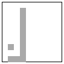 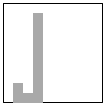 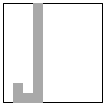
Рисунок 81: Простой Тетрис
В нашей упрощенной версии игра начинается с того, что отдельные блоки падают сверху сцены. Как только один из них приземляется на землю, он приходит в состояние покоя, а другой блок начинает падать из какого-то случайного места. Игрок может управлять падающим блоком с помощью клавиш со стрелками “left”(влево) и “right”(вправо). Как только блок приземляется на пол холста или поверх какого-либо уже неподвижного блока, он останавливается и становится неподвижным. За короткое время блоки складываются; если стопка блоков достигает потолка холста, игра окончена. Естественно, цель этой игры - высадить как можно больше блоков. См. Рисунок 81 для иллюстрации идеи.
-
Ширина и высота игры фиксированы, как и блоки. С точки зрения BSL+ вам нужны такие определения:
(define WIDTH 10) ; # of blocks, horizontally (define SIZE 10) ; blocks are squares (define SCENE-SIZE (* WIDTH SIZE)) (define BLOCK ; red squares with black rims (overlay (square (- SIZE 1) "solid" "red") (square SIZE "outline" "black"))) Объясните эти определения, прежде чем читать дальше. -
«Пейзажи»(“landscapes”) блоков различаются от игры к игре и от одного тика часов до другого. Уточним это. Внешний вид блоков остается прежним; их позиции различаются.
Теперь мы остаемся с центральной проблемой проектирования представления данных для падающих блоков и ландшафта блоков на земле. Когда дело доходит до блока сброса, снова есть две возможности: См. Упражнение 215, чтобы узнать о соответствующем проектном решении. одна - выбрать «физическое» представление, другая - «логическое». physical(Физическое) представление отслеживает фактическое физическое position(положение) блоков на холсте; logical(логическая) подсчитывает, сколько ширины блока имеет блок слева и сверху. Когда дело доходит до неподвижных блоков, есть даже больше вариантов, чем для отдельных блоков: список физических позиций, список логических позиций, список высот стека и так далее.
(define-struct tetris [block landscape]) (define-struct block [x y]) ; A Tetris is a structure: ; (make-tetris Block Landscape) ; A Landscape is one of: ; – '() ; – (cons Block Landscape) ; A Block is a structure: ; (make-block N N) ; interpretations ; (make-block x y) depicts a block whose left ; corner is (* x SIZE) pixels from the left and ; (* y SIZE) pixels from the top; ; (make-tetris b0 (list b1 b2 ...)) means b0 is the ; dropping block, while b1, b2, and ... are resting
(define landscape0 ...) (define block-dropping ...) (define tetris0 ...) (define tetris0-drop ...) ... (define block-landed (make-block 0 (- HEIGHT 1))) ... (define block-on-block (make-block 0 (- HEIGHT 2)))
Разработайте программу tetris-render, которая превращает данный экземпляр Tetris(тетриса) в Image(изображение). Используйте область взаимодействия DrRacket, чтобы разработать выражение, которое отображает некоторые из ваших (чрезвычайно) простых примеров данных. Затем сформулируйте функциональные примеры в виде модульных тестов и самой функции.
Упражнение 221. Создайте интерактивную программу tetris-main, которая отображает блоки, падающие по прямой линии с верхней части холста и приземляющиеся на пол или на блоки, которые уже лежат. Входные данные в tetris-main должны определять скорость(rate), с которой тикают часы. См. Документацию on-tick, чтобы узнать, как задать rate.
Чтобы определить, приземлился ли блок, мы предлагаем вам бросить его и проверить, находится ли он на полу или перекрывается с одним из блоков в списке неподвижных блоков. Подсказка Прочитайте о примитиве member?.
Когда блок приземляется, ваша программа должна немедленно создать другой блок, который спускается в столбец справа от текущего. Если текущий блок уже находится в крайнем правом столбце, следующий блок должен использовать крайний левый столбец. В качестве альтернативы определите функцию block-generate, которая случайным образом выбирает столбец, отличный от текущего; см. упражнение 219 для вдохновения.
Упражнение 222. Измените программу из упражнения 221, чтобы игрок мог управлять горизонтальным перемещением падающего блока. Каждый раз, когда игрок нажимает клавишу со стрелкой "left"(влево), сбрасываемый блок должен сдвигаться на один столбец влево, если он не находится в столбце 0 или слева от него уже нет стопки неподвижных блоков. Точно так же каждый раз, когда игрок нажимает "right"(вправо), выпадающий блок должен перемещаться на один столбец вправо, если это возможно.
Упражнение 223. Оборудуйте программу из упражнения 222 предложением stop-when(о остановке). Игра заканчивается, когда один из столбцов содержит достаточно блоков, чтобы “touch”(коснуться) верха холста.
Как только вы решите упражнение 223, у вас будет простая игра в тетрис. Вы можете немного отполировать его, прежде чем показывать своим друзьям. Например, последний холст может отображать текст, который говорит, сколько блоков игрок смог сложить. Или каждый холст мог бы содержать такой текст. Выбор остается за вами.
12.7 Полная космическая война
Детализации и Структуры отсылает нас к игре с космическими захватчиками, в которой мало действий; игрок может просто перемещать наземную силу вперед и назад. Списки и мир позволяют игроку сделать столько выстрелов, сколько пожелаете. В этом разделе представлены упражнения, которые помогут вам завершить эту игру.
Как всегда, на Землю пытается приземлиться НЛО. Задача игрока - не допустить приземления НЛО. Для этого в игре есть танк, который может делать произвольное количество выстрелов. Когда один из этих выстрелов приближается к центру тяжести НЛО, игра заканчивается, и игрок побеждает. Если НЛО подходит достаточно близко к земле, игрок проигрывает.
Упражнение 224. Используйте уроки, извлеченные из предыдущих двух разделов, и постепенно разрабатывайте расширение игры, добавляя одну функцию игры за другой. Всегда используйте рецепт разработки и руководствуйтесь инструкциями по вспомогательным функциям. Если вам понравилась игра, добавьте другие возможности: показывать бегущий текст; оснастить НЛО зарядами, способными уничтожить танк; создать целый флот атакующих НЛО; и, прежде всего, используйте свое воображение.
Если вам не нравятся НЛО и танки, стреляющие друг в друга, используйте одни и те же идеи для создания похожей цивилизованной игры.
Упражнение 225. Создайте игру о тушении пожара.
Действие игры разворачивается в западных штатах, где через обширные леса бушуют пожары. Она имитирует действия по тушению пожара с воздуха. В частности, игрок действует как пилот самолета, который сбрасывает воду на костры на земле. Игрок управляет горизонтальными движениями самолета и сбросом водных грузов.
Ваша игровая программа запускает огонь в случайных местах на земле. Вы можете ограничить количество пожаров, сделав их функцией от того, сколько пожаров в настоящее время горит, или от других факторов. Цель игры - потушить все пожары за ограниченное время. Подсказка Используйте итеративный подход к разработке, как показано в этой главе, для создания этой игры.
12.8 Конечные автоматы
Конечные автоматы (Finite state machines - FSM) и регулярные выражения - повсеместные элементы программирования. Как объясняет Миры Конечных Автоматов, конечные автоматы - это один из способов думать о программных мирах. Напротив, в упражнении 109 показано, как разрабатывать программные миры, реализующие конечный автомат, и проверять, нажимает ли игрок определенную серию(последовательность) нажатий клавиш.
a (b|c)* d
a (b|c)* a
Естественная идея - найти общее решение, то есть программный мир, который использует представление данных конечного автомата и распознает, нажимает ли игрок соответствующую последовательность клавиш. В этом разделе представлена разработка именно такого программного мира, хотя и значительно упрощенного. В частности, конечные автоматы приходят без начального или конечного состояния, и сопоставление игнорирует фактические нажатия клавиш; вместо этого переход из одного состояния в другое происходит всякий раз, когда нажимается любая клавиша. Кроме того, мы требуем, чтобы состояния были строками описывающими цвета. Таким образом, программа интерпретации конечных автоматов может просто отображать текущее состояние в виде цвета.
Пример Задачи Создайте программу, которая интерпретирует данный конечный автомат в определенном(указанном) списке KeyEvent. То есть программа использует представление данных конечного автомата и строки. Результатом будет #true(истинно), если строка соответствует регулярному выражению, соответствующему конечному автомату; в противном случае это #false(ложь).
; An FSM is one of: ; – '() ; – (cons Transition FSM) (define-struct transition [current next]) ; A Transition is a structure: ; (make-transition FSM-State FSM-State) ; FSM-State is a Color. ; interpretation An FSM represents the transitions that a ; finite state machine can take from one state to another ; in reaction to keystrokes Рисунок 82: Представление и интерпретация конечных автоматов в целом
Упрощенная постановка задачи диктует ряд моментов, включая необходимость определения данных для представления конечных автоматов, природы их состояний и их внешнего вида в виде изображения. Рисунок 82 собирает эту информацию. Он начинается с определения данных для конечных автоматов(FSM). Как видите, FSM(конечный автомат) - это просто список Transition(переходов). Мы должны использовать список, потому что мы хотим, чтобы наш программный мир работал с любым автоматом, а это означает конечное, но произвольно большое количество состояний. Каждый Transition(Переход) объединяет два состояния в структуру: current(текущее) состояние и next(следующее) состояние, то есть то, в которое машина переходит, когда игрок нажимает клавишу. В последней части определения данных говорится, что состояние - это просто название цвета.
Упражнение 226. Разработайте state=?, Предикат равенства для состояний.
(define fsm-traffic (list (make-transition "red" "green") (make-transition "green" "yellow") (make-transition "yellow" "red")))
Упражнение 227. BW Machine - это конечный автомат, который переключается с черного на белый и обратно на черный для каждого клавиатурного события. Сформулируйте представление данных для BW Machine.
; FSM -> ??? ; match the keys pressed with the given FSM (define (simulate an-fsm) (big-bang ... [to-draw ...] [on-key ...]))
Давайте в любом случае проследим рецепт создания программного мира, чтобы увидеть, как далеко это нас заведет. Он говорит нам различать те вещи в “реальном мире”, которые меняются, и те, что остаются прежними. Хотя функция simulate использует экземпляр FSM(конечного автомата), мы также знаем, что этот FSM(конечный автомат) не изменяется. Что меняется, так это текущее состояние машины.
; A SimulationState.v1 is an FSM-State.
(define (simulate.v1 fsm0) (big-bang initial-state [to-draw render-state.v1] [on-key find-next-state.v1]))
; SimulationState.v1 -> Image ; renders a world state as an image (define (render-state.v1 s) empty-image) ; SimulationState.v1 KeyEvent -> SimulationState.v1 ; finds the next state from ke and cs (define (find-next-state.v1 cs ke) cs)
Как может find-next-state найти следующее состояние, когда все, что ему дано, - это текущее состояние и нажатие клавиши?
(define-struct fs [fsm current]) ; A SimulationState.v2 is a structure: ; (make-fs FSM FSM-State)
; SimulationState.v2 -> Image ; renders a world state as an image (define (render-state.v2 s) empty-image) ; SimulationState.v2 KeyEvent -> SimulationState.v2 ; finds the next state from ke and cs (define (find-next-state.v2 cs ke) cs)
; FSM FSM-State -> SimulationState.v2 ; match the keys pressed with the given FSM (define (simulate.v2 an-fsm s0) (big-bang (make-fs an-fsm s0) [to-draw state-as-colored-square] [on-key find-next-state]))
(simulate.v2 fsm-traffic "red")
Замечание о выразительной силе. Теперь мы можем объяснить ограничения BSL. Несмотря на то, что данный конечный автомат(FSM) не изменяется в ходе моделирования, его описание должно стать частью состояния мира. В идеале программа должна выражать, что описание конечного автомата остается постоянным, но вместо этого программа должна рассматривать конечный автомат как часть постоянно меняющегося(ever-changing) состояния. Читатель программы не может вывести этот факт только на основании первого фрагмента big-bang.
Следующая часть книги решает эту загадку с введением нового языка программирования и особой лингвистической конструкции: ISL и локальных определений (local). Для получения дополнительной информации см. Локальные определения, добавляющие выразительную силу. Конец
; SimulationState.v2 -> Image ; renders current world state as a colored square (check-expect (state-as-colored-square (make-fs fsm-traffic "red")) (square 100 "solid" "red")) (define (state-as-colored-square an-fsm) (square 100 "solid" (fs-current an-fsm)))
; SimulationState.v2 KeyEvent -> SimulationState.v2 ; finds the next state from an-fsm and ke (define (find-next-state an-fsm ke) an-fsm)
(check-expect (find-next-state (make-fs fsm-traffic "red") "n") (make-fs fsm-traffic "green")) (check-expect (find-next-state (make-fs fsm-traffic "red") "a") (make-fs fsm-traffic "green"))
(check-expect (find-next-state (make-fs fsm-traffic "green") "q") (make-fs fsm-traffic "yellow"))
(define (find-next-state an-fsm ke) (make-fs (fs-fsm an-fsm) (find (fs-fsm an-fsm) (fs-current an-fsm))))
; FSM FSM-State -> FSM-State ; finds the state representing current in transitions ; and retrieves the next field (check-expect (find fsm-traffic "red") "green") (check-expect (find fsm-traffic "green") "yellow") (check-error (find fsm-traffic "black") "not found: black") (define (find transitions current) current)
Стоп! Придумайте дополнительные примеры, а затем выполните упражнения.
Упражнение 228. Завершите разработку find.
После тестирования вспомогательных функций используйте simulate, чтобы поиграть с fsm-traffic и машиной BW из упражнения 227.
Наша программа симуляции(моделирования) намеренно носит довольно ограничительный характер. В частности, вы не можете использовать её для представления конечных автоматов(FSM), которые переходят из одного состояния в другое в зависимости от того, какую клавишу нажимает игрок. Однако, учитывая систематическую разработку, вы можете расширить программу такими возможностями.
(define-struct ktransition [current key next]) ; A Transition.v2 is a structure: ; (make-ktransition FSM-State KeyEvent FSM-State)
Измените схему simulate(моделирования) так, чтобы теперь она обрабатывала нажатия клавиш соответствующим образом. Следуйте рецепту проектирования, начните с адаптации примеров данных.
Используйте исправленную программу, чтобы смоделировать запуск конечного автомата из упражнения 109 со следующей последовательностью нажатий клавиш: "a", "b", "b", "c" и "d".
Конечные автоматы бывают с начальным и конечным состояниями. Когда программа, которая “runs”(запускает) конечный автомат, достигает конечного состояния(final state), она должна остановиться. В заключительном упражнении мы еще раз пересматриваем представление данных конечных автоматов, чтобы представить эти идеи.
(define-struct fsm [initial transitions final]) (define-struct transition [current key next]) ; An FSM.v2 is a structure: ; (make-fsm FSM-State LOT FSM-State) ; A LOT is one of: ; – '() ; – (cons Transition.v3 LOT) ; A Transition.v3 is a structure: ; (make-transition FSM-State KeyEvent FSM-State)
Разработайте функцию fsm-simulate, которая принимает FSM.v2 и запускает его при нажатии игроком клавиш. Если последовательность нажатий клавиш заставляет FSM.v2 достичь конечного состояния, fsm-simulate останавливается. Подсказка Функция использует поле initial переданной структуры fsm для отслеживания текущего состояния.
Замечание об итеративном уточнении В последних двух проектах вводится понятие “проектирование путем итеративного уточнения”. Основная идея состоит в том, что первая программа реализует только часть желаемого поведения, следующая - немного больше и так далее. В конце концов вы получаете программу, которая демонстрирует все желаемое поведение или, по крайней мере, достаточное его количество, чтобы удовлетворить клиента. Дополнительные сведения см. В разделе Итеративное уточнение. Конец
13 Резюме
Вторая часть книги посвящена разработке программ, работающих с произвольно большими данными. Как вы легко можете себе представить, программное обеспечение особенно полезно, когда оно используется с информацией, которая поступает без заранее определенных ограничений по размеру, а это означает, что «произвольно большие данные» являются критическим шагом на вашем пути к тому, чтобы стать настоящим программистом. В этом духе мы предлагаем вам вынести три урока:
-
В этой части уточняется рецепт разработки, чтобы иметь дело с ссылками на себя и перекрестными ссылками в определениях данных. Возникновение первых требует разработки рекурсивных функций, а появление вторых требует вспомогательных функций.
-
Сложные проблемы требуют разделения на отдельные проблемы. Когда вы decomposition(декомпозируете/разделяете) проблему, вам нужны две части: функции, которые решают отдельные проблемы, и определения данных, которые объединяют эти отдельные решения в одно. Чтобы убедиться, что композиция работает после того, как вы потратили время на отдельные программы, вам необходимо сформулировать свои «пожелания» вместе с необходимыми определениями данных.
Разработка с помощью декомпозиции-композиции особенно полезна, когда в формулировке проблемы неявно или явно упоминаются вспомогательные задачи, когда этап кодирования функции требует обхода (другого) произвольно большого фрагмента данных и - что, возможно, удивительно - когда общую проблему решить несколько проще, чем конкретную, описанную в формулировке задачи.
-
Прагматика имеет значение. Если вы хотите разрабатывать программы big-bang, вам необходимо понимать их различные предложения и то, что они выполняют. Или, если ваша задача заключается в разработке программ, решающих математические задачи, вам лучше убедиться, что вы знаете, какие математические операции предлагают выбранный язык и его библиотеки.
Переплетенные(Intertwined) Данные продолжает исследование «больших» структурированных данных и демонстрирует, как рецепт проектирования масштабируется до самых сложных типов данных. Между тем, следующая часть касается важного беспокойства, которое у вас должно возникнуть на данном этапе, а именно того, что работа программиста состоит в создании программ одного и того же типа снова и снова.